<title>Acrylic System</title>
<link rel="preconnect" href="https://fonts.googleapis.com">
<link rel="preconnect" href="https://fonts.gstatic.com" crossorigin>
<link rel="stylesheet" href="https://fonts.googleapis.com/css2?family=Marcellus&family=Karla:ital,wght@0,300;0,400;0,500;0,600;1,300&display=swap">

<style>
/* ============================================================
   Direction C - "Venere".
   Light by intent, after the dark-room experiment of B was set
   aside. Porcelain ground, deep marine ink, aqua from the
   original site's own water asset, and one lipstick-red accent
   taken from the goddess in the original header - the site's
   only mascot, kept and promoted to a brand device.
   Single visual world: every colour declared outright.
   ============================================================ */
:root{
  --ground:#FBFCFD;
  --raise:#FFFFFF;
  --sunk:#EAF3F7;      /* mist panel: image frames sit on this */
  --ink:#16303F;       /* deep marine */
  --muted:#4E6673;
  --faint:#8AA0AB;
  --metal:#1E7FA6;     /* aqua: labels, dimensions, quiet accent */
  --metal-dim:#16607E;
  --lip:#C42B3C;       /* lipstick red: the CTA, and only the CTA */
  --lip-deep:#A02231;
  --line:rgba(22,48,63,.16);
  --line-soft:rgba(22,48,63,.08);
  --draw:#16303F;
  --dim:#1E7FA6;
  --water:#7EC8E3;
}

*{box-sizing:border-box}
html{-webkit-text-size-adjust:100%}
body{
  margin:0;background:var(--ground);color:var(--ink);
  font-family:"Karla","Helvetica Neue",Arial,sans-serif;
  font-size:17px;font-weight:400;line-height:1.72;
  -webkit-font-smoothing:antialiased;
}
h1,h2,h3{
  font-family:"Marcellus",Palatino,"Times New Roman",serif;
  font-weight:400;line-height:1.08;letter-spacing:.004em;
  text-wrap:balance;margin:0;
}
a{color:inherit}
p{margin:0 0 1.1em}
img{max-width:100%}
:focus-visible{outline:2px solid var(--metal);outline-offset:4px}

/* ---------- shared ---------- */
.wrap{max-width:1320px;margin:0 auto;padding:0 40px}
.narrow{max-width:940px;margin:0 auto;padding:0 40px}
.label{
  font-size:11px;font-weight:600;letter-spacing:.3em;text-transform:uppercase;
  color:var(--metal);margin:0 0 26px;
}
.lede{font-size:19px;line-height:1.7;color:var(--muted);max-width:60ch}
.prose{max-width:62ch;color:var(--muted)}
.prose strong{color:var(--ink);font-weight:600}
.rule{height:1px;background:var(--line);border:0;margin:0}

.btn{
  display:inline-flex;align-items:center;gap:12px;
  font-family:"Karla";font-size:12px;font-weight:600;letter-spacing:.2em;
  text-transform:uppercase;padding:16px 30px;border:1px solid var(--line);
  background:transparent;color:var(--ink);text-decoration:none;cursor:pointer;
  border-radius:999px;
  transition:border-color .4s ease,color .4s ease,background .4s ease;
}
.btn:hover{border-color:var(--metal);color:var(--metal)}
.btn.fill{background:var(--lip);color:#fff;border-color:var(--lip)}
.btn.fill:hover{background:var(--lip-deep);border-color:var(--lip-deep);color:#fff}

/* ---------- header ---------- */
header{
  position:fixed;top:0;left:0;right:0;z-index:60;
  transition:background .5s ease,border-color .5s ease,box-shadow .5s ease;
  border-bottom:1px solid transparent;
}
header.solid{background:rgba(251,252,253,.92);backdrop-filter:blur(14px);
  border-bottom-color:var(--line-soft);box-shadow:0 1px 24px rgba(22,48,63,.06)}
.bar{display:flex;align-items:center;gap:36px;height:88px}
.brand{text-decoration:none;line-height:1;flex-shrink:0;display:flex;
  align-items:center;gap:14px}
.logo-mark{width:46px;height:38px;flex-shrink:0;display:block}
/* the dog from the original banner, perched on the water line */
.dog-vignette{position:absolute;left:12%;bottom:14px;z-index:3;margin:0;
  text-align:center;width:230px}
.dog-vignette img{width:150px;height:150px;border-radius:50%;object-fit:cover;
  object-position:50% 42%;border:5px solid #fff;
  box-shadow:0 12px 36px rgba(22,48,63,.2)}
.dog-vignette figcaption{font-size:10px;letter-spacing:.22em;text-transform:uppercase;
  color:var(--muted);margin-top:10px;font-weight:600}
/* the original bath-in-bath animation, from the company archive */
.archive{margin:0;background:var(--raise);border:1px solid var(--line-soft);
  border-radius:20px;padding:20px;text-align:center}
.archive img{width:100%;max-width:400px;border-radius:12px}
.archive figcaption{font-size:10px;letter-spacing:.22em;text-transform:uppercase;
  color:var(--muted);margin-top:12px;font-weight:600}
.brand b{
  display:block;font-family:"Marcellus",Palatino,serif;font-weight:400;
  font-size:21px;letter-spacing:.03em;
}
.brand span.tag{
  display:block;font-size:8.5px;letter-spacing:.42em;text-transform:uppercase;
  color:var(--metal);margin-top:6px;font-weight:600;
}
nav{display:flex;gap:34px;margin-left:auto;align-items:center}
nav a{
  font-size:12px;font-weight:600;letter-spacing:.16em;text-transform:uppercase;
  text-decoration:none;color:var(--muted);transition:color .3s ease;white-space:nowrap;
}
nav a:hover,nav a[aria-current="page"]{color:var(--ink)}
.utils{display:flex;align-items:center;gap:22px;flex-shrink:0}
.lang{display:flex;gap:9px;font-size:11px;letter-spacing:.16em}
.lang button{
  background:none;border:0;padding:0;cursor:pointer;color:var(--faint);
  font-family:"Karla";font-weight:600;font-size:11px;letter-spacing:.16em;
  transition:color .3s ease;
}
.lang button[aria-pressed="true"]{color:var(--ink)}
.menu-btn{display:none;background:none;border:0;color:var(--ink);cursor:pointer;
  font-size:19px;padding:6px}

/* ---------- home hero: light, the goddess's niche ---------- */
.hero-c{position:relative;padding:150px 0 0;overflow:hidden}
.hero-grid{display:grid;grid-template-columns:minmax(0,1.05fr) minmax(0,.95fr);
  gap:70px;align-items:center}
.hero-copy h1{font-size:clamp(40px,5.6vw,84px);max-width:14ch}
.hero-copy h1 em{font-style:normal;color:var(--metal)}
.hero-line{margin-top:26px;color:var(--muted);font-size:clamp(16px,1.4vw,19px);
  max-width:46ch}
.hero-cta{display:flex;gap:14px;flex-wrap:wrap;margin-top:38px}
/* the arch: a classical niche for the product - the alcove of a
   Venus, not a rectangle from a catalogue */
.arch{margin:0;overflow:hidden;border-radius:999px 999px 0 0;background:var(--sunk)}
.arch img{width:100%;height:100%;display:block;object-fit:cover;aspect-ratio:5/6}
.arch.small img{aspect-ratio:4/5}
/* the original site's own water surface, kept: it closes the hero
   and fades into the porcelain below */
.waterline{margin-top:64px;pointer-events:none}
.waterline img{
  width:100%;display:block;
  -webkit-mask-image:linear-gradient(180deg,#000 26%,transparent 92%);
  mask-image:linear-gradient(180deg,#000 26%,transparent 92%);
}

/* ---------- photo hero (inner pages) ---------- */
.hero{position:relative;height:64svh;min-height:420px;display:flex;align-items:flex-end;
  overflow:hidden;color:#fff}
.hero-img{position:absolute;inset:0}
.hero-img img{width:100%;height:100%;object-fit:cover;display:block}
.hero-img::after{
  content:"";position:absolute;inset:0;
  background:linear-gradient(0deg,rgba(22,48,63,.82) 4%,rgba(22,48,63,.34) 52%,rgba(22,48,63,.4) 100%);
}
.hero .wrap{position:relative;z-index:2;padding-bottom:64px}
.hero h1{color:#fff}
.hero .label{color:#9FD6EA}
.scrollcue{display:none}

/* ---------- sections ---------- */
section{padding:124px 0}
section.tight{padding:84px 0}
section.first{padding-top:150px}
h2.sec{font-size:clamp(30px,4vw,54px);margin-bottom:22px}
h3.sub{font-family:"Karla";font-size:12px;font-weight:600;letter-spacing:.24em;
  text-transform:uppercase;color:var(--metal);margin:0 0 14px}

/* editorial two-up */
.duo{display:grid;grid-template-columns:minmax(0,.86fr) minmax(0,1.14fr);gap:80px;
  align-items:center}
.duo.flip{grid-template-columns:minmax(0,1.14fr) minmax(0,.86fr)}
.frame{position:relative;overflow:hidden;background:var(--sunk);border-radius:20px}
.frame img{width:100%;display:block;aspect-ratio:4/5;object-fit:cover}
.frame.wide img{aspect-ratio:16/10}
.frame figcaption{
  position:absolute;left:0;right:0;bottom:0;padding:20px 24px;font-size:10px;
  letter-spacing:.26em;text-transform:uppercase;color:#fff;
  background:linear-gradient(0deg,rgba(22,48,63,.6),transparent);
}

/* full-bleed statement: photographic, so it keeps a marine scrim
   and explicit light text even on this light site */
.bleed{position:relative;overflow:hidden;min-height:70vh;display:flex;align-items:center;
  color:#fff}
.bleed img{position:absolute;inset:0;width:100%;height:100%;object-fit:cover}
.bleed::after{content:"";position:absolute;inset:0;
  background:linear-gradient(90deg,rgba(22,48,63,.9) 2%,rgba(22,48,63,.55) 52%,rgba(22,48,63,.24) 100%)}
.bleed .wrap{position:relative;z-index:2}
.bleed h2{max-width:15ch;color:#fff}
.bleed p{color:rgba(255,255,255,.82);max-width:46ch;margin-top:20px;font-size:17.5px}
.bleed .label{color:#9FD6EA}
.bleed .btn{border-color:rgba(255,255,255,.5);color:#fff}
.bleed .btn:hover{border-color:#fff;color:#fff}

/* ---------- the collection ---------- */
.collection{display:grid;grid-template-columns:repeat(2,1fr);gap:44px 44px}
.piece{
  position:relative;text-decoration:none;color:inherit;display:block;
}
.piece-img{
  position:relative;overflow:hidden;background:var(--sunk);aspect-ratio:5/4;
  display:flex;align-items:center;justify-content:center;padding:9%;
  border-radius:20px;
}
.piece-img img{
  max-width:100%;max-height:100%;width:auto;height:auto;display:block;object-fit:contain;
  transition:transform 1.1s cubic-bezier(.16,.7,.24,1),opacity .5s ease;
}
.piece:hover .piece-img img{transform:scale(1.045)}
.piece-plan{
  position:absolute;inset:0;display:flex;align-items:center;justify-content:center;
  background:var(--sunk);opacity:0;transition:opacity .45s ease;padding:34px;
  pointer-events:none;border-radius:20px;
}
@media (hover:hover){.piece:hover .piece-plan{opacity:1}}
.piece-body{padding:22px 4px 6px;display:flex;justify-content:space-between;
  align-items:baseline;gap:20px}
.piece-body h4{
  font-family:"Marcellus",Palatino,serif;font-weight:400;font-size:22px;
  margin:0;letter-spacing:.005em;line-height:1.22;
}
.piece-body span{font-size:12px;letter-spacing:.16em;color:var(--faint);white-space:nowrap;
  font-variant-numeric:tabular-nums}
.piece-fam{font-size:9.5px;letter-spacing:.3em;text-transform:uppercase;
  color:var(--metal);margin-bottom:9px;display:block;font-weight:600}

/* family strip */
.families{display:grid;grid-template-columns:repeat(4,1fr);gap:22px}
.fam{position:relative;display:block;text-decoration:none;color:inherit;overflow:hidden;
  background:var(--sunk);border-radius:18px}
.fam img{width:100%;display:block;aspect-ratio:1/1;object-fit:cover;
  transition:transform 1s cubic-bezier(.16,.7,.24,1)}
.fam:hover img{transform:scale(1.05)}
.fam-cap{position:absolute;inset:auto 0 0 0;padding:52px 22px 20px;color:#fff;
  background:linear-gradient(0deg,rgba(22,48,63,.72),transparent)}
.fam-cap b{display:block;font-family:"Marcellus",Palatino,serif;font-weight:400;
  font-size:20px;letter-spacing:.005em}
.fam-cap span{font-size:9.5px;letter-spacing:.26em;text-transform:uppercase;
  color:#B9E2F1;font-weight:600}

/* ---------- gallery reel ---------- */
.reel{display:grid;grid-auto-flow:column;grid-auto-columns:minmax(340px,38vw);
  gap:22px;overflow-x:auto;scroll-snap-type:x mandatory;scrollbar-width:none;
  padding:0 40px}
.reel::-webkit-scrollbar{display:none}
.reel figure{margin:0;scroll-snap-align:center;position:relative;overflow:hidden;
  border-radius:18px}
.reel img{width:100%;display:block;aspect-ratio:4/3;object-fit:cover;background:var(--sunk)}
.reel figcaption{position:absolute;left:0;right:0;bottom:0;padding:38px 22px 18px;
  font-size:10px;letter-spacing:.26em;text-transform:uppercase;color:#fff;
  background:linear-gradient(0deg,rgba(22,48,63,.62),transparent)}

/* ---------- detail ---------- */
.detail{display:grid;grid-template-columns:minmax(0,1.2fr) minmax(0,.8fr);gap:74px;
  align-items:start}
.plan-panel{background:var(--raise);border:1px solid var(--line-soft);
  padding:44px;margin-top:22px;border-radius:20px}
.chips{display:flex;gap:8px;flex-wrap:wrap;margin-top:14px}
.chip{font-size:12.5px;letter-spacing:.1em;padding:10px 16px;border:1px solid var(--line);
  color:var(--ink);border-radius:999px;font-variant-numeric:tabular-nums}
table.spec{width:100%;border-collapse:collapse;font-size:14px;margin-top:16px}
table.spec th,table.spec td{text-align:left;padding:14px 2px;border-bottom:1px solid var(--line-soft);
  font-weight:400}
table.spec th{color:var(--faint);width:52%}

/* ---------- trade block: the finder, demoted on purpose ---------- */
.trade{background:var(--sunk)}
.trade .label{color:var(--metal-dim)}
.finder-row{display:flex;gap:22px;align-items:flex-end;flex-wrap:wrap;margin-top:26px}
.field{display:flex;flex-direction:column;gap:9px}
.field label{font-size:10px;letter-spacing:.26em;text-transform:uppercase;color:var(--muted);
  font-weight:600}
.field input,.field select{
  font-family:"Karla";font-size:16px;font-weight:400;padding:13px 15px;width:120px;
  background:var(--raise);border:1px solid var(--line);border-radius:10px;color:var(--ink);
}
.field select{width:auto;min-width:150px}
.field input:focus,.field select:focus{outline:0;border-color:var(--metal)}
.presets{display:flex;gap:9px;flex-wrap:wrap;margin-top:24px;align-items:center}
.presets span{font-size:10px;letter-spacing:.26em;text-transform:uppercase;color:var(--muted);
  margin-right:6px;font-weight:600}
.preset{font-family:"Karla";font-size:12.5px;letter-spacing:.06em;padding:8px 14px;
  border:1px solid var(--line);background:var(--raise);color:var(--muted);cursor:pointer;
  border-radius:999px;transition:all .3s ease;font-variant-numeric:tabular-nums}
.preset:hover{border-color:var(--metal);color:var(--metal)}
.preset[aria-pressed="true"]{border-color:var(--ink);color:var(--ink)}
.found{margin-top:34px;font-size:11px;letter-spacing:.24em;text-transform:uppercase;
  color:var(--metal-dim);font-weight:600}
.found-grid{display:grid;grid-template-columns:repeat(4,1fr);gap:22px;margin-top:18px}
.found-grid .piece-img{background:var(--raise)}
.found-grid .piece-plan{background:var(--raise)}

/* ---------- filter bar ---------- */
.filters{display:flex;gap:12px;flex-wrap:wrap;align-items:center;
  padding:22px 0;border-top:1px solid var(--line);border-bottom:1px solid var(--line);
  margin-bottom:56px}
.filters button{
  font-family:"Karla";font-size:11px;font-weight:600;letter-spacing:.2em;
  text-transform:uppercase;background:none;border:0;padding:8px 2px;color:var(--faint);
  cursor:pointer;transition:color .3s ease;
}
.filters button:hover{color:var(--muted)}
.filters button[aria-pressed="true"]{color:var(--ink)}
.filters i{font-style:normal;color:var(--faint);opacity:.75;margin-left:5px;font-size:10px}
.filters .sep{color:var(--faint);opacity:.4}

/* ---------- steps / timeline ---------- */
.steps{display:grid;grid-template-columns:repeat(4,1fr);gap:22px}
.step{background:var(--raise);border:1px solid var(--line-soft);padding:40px 32px;
  border-radius:18px}
.step b{display:block;font-family:"Marcellus",Palatino,serif;font-weight:400;
  font-size:32px;color:var(--metal);margin-bottom:18px;line-height:1}
.step h4{font-family:"Karla";font-size:13px;font-weight:600;letter-spacing:.18em;
  text-transform:uppercase;margin:0 0 12px}
.step p{color:var(--muted);font-size:15.5px;margin:0;line-height:1.68}

.years{display:grid;grid-template-columns:repeat(3,1fr);gap:60px}
.year b{display:block;font-family:"Marcellus",Palatino,serif;font-weight:400;
  font-size:50px;line-height:1;margin-bottom:16px;color:var(--metal-dim)}
.year p{color:var(--muted);font-size:16px;margin:0}

/* ---------- contact ---------- */
.formgrid{display:grid;grid-template-columns:repeat(2,1fr);gap:26px 22px}
.formgrid .full{grid-column:1/-1}
.formgrid label{display:block;font-size:10px;letter-spacing:.26em;text-transform:uppercase;
  color:var(--muted);margin-bottom:10px;font-weight:600}
.formgrid input,.formgrid select,.formgrid textarea{
  width:100%;font-family:"Karla";font-weight:400;font-size:16px;padding:12px 14px;
  background:var(--raise);border:1px solid var(--line);border-radius:10px;color:var(--ink);
}
.formgrid textarea{min-height:96px;resize:vertical;line-height:1.7}
.formgrid input:focus,.formgrid select:focus,.formgrid textarea:focus{
  outline:0;border-color:var(--metal)}
.formgrid option{background:var(--raise);color:var(--ink)}
.composed{margin-top:24px;padding:26px;border:1px solid var(--line);border-radius:14px;
  white-space:pre-wrap;font-size:14px;line-height:1.8;color:var(--muted);
  background:var(--raise)}
.addr{font-size:16px;line-height:2.1;color:var(--muted)}
.addr b{display:block;color:var(--ink);font-weight:600;margin-bottom:4px}
.addr a{color:var(--metal-dim);text-decoration:none}
.addr a:hover{color:var(--ink)}

/* ---------- closing: the goddess makes the ask ---------- */
.closing{background:var(--sunk);padding:96px 0}
.closing-grid{display:grid;grid-template-columns:minmax(0,.38fr) minmax(0,.62fr);
  gap:70px;align-items:center}
.closing h2{font-size:clamp(30px,4.2vw,56px);max-width:16ch}
.closing p{color:var(--muted);max-width:50ch;margin:22px 0 0;font-size:18px}
.closing .btns{display:flex;gap:14px;margin-top:38px;flex-wrap:wrap}
.closing .btn{background:var(--raise)}
.closing .btn.fill{background:var(--lip)}
.closing .btn.fill:hover{background:var(--lip-deep)}

footer{border-top:1px solid var(--line);padding:74px 0 40px}
.foot{display:grid;grid-template-columns:1.6fr 1fr 1fr 1fr;gap:44px}
footer h5{font-size:10px;letter-spacing:.28em;text-transform:uppercase;color:var(--metal);
  margin:0 0 20px;font-weight:600}
footer a{display:block;color:var(--muted);text-decoration:none;font-size:14.5px;padding:6px 0;
  transition:color .3s ease}
footer a:hover{color:var(--ink)}
.foot-brand b{display:block;font-family:"Marcellus",Palatino,serif;font-weight:400;
  font-size:22px}
.foot-brand span{display:block;font-size:8.5px;letter-spacing:.42em;text-transform:uppercase;
  color:var(--metal);margin-top:7px;font-weight:600}
.foot-brand p{margin-top:26px;font-size:14.5px;line-height:2;color:var(--muted)}
.legal{margin-top:56px;padding-top:24px;border-top:1px solid var(--line-soft);
  display:flex;justify-content:space-between;gap:20px;flex-wrap:wrap;
  font-size:11px;letter-spacing:.16em;text-transform:uppercase;color:var(--faint)}

/* ---------- drawing primitives ---------- */
.dimline{stroke:var(--dim);stroke-width:.9}
.dimtxt{fill:var(--dim);font-family:"Karla";font-size:11px;letter-spacing:.08em}
.outline{fill:none;stroke:var(--draw);stroke-width:1.3;opacity:.82}
.ghost{fill:none;stroke:var(--faint);stroke-width:1.1;stroke-dasharray:5 5}
.fillsoft{fill:rgba(30,127,166,.06)}
.hatch{stroke:var(--faint);stroke-width:.6;opacity:.5}
#shell{animation:drop 1.6s cubic-bezier(.2,.72,.26,1) .3s both}
@keyframes drop{from{transform:translateY(-56px);opacity:0}to{transform:translateY(0);opacity:1}}
.anno{animation:fade .9s ease 1.6s both}
@keyframes fade{from{opacity:0}to{opacity:1}}
@media (prefers-reduced-motion:reduce){
  #shell,.anno{animation:none}
  *{transition:none !important}
}

/* ---------- responsive ---------- */
@media (max-width:1060px){
  .wrap,.narrow{padding:0 28px}
  .duo,.duo.flip{grid-template-columns:1fr;gap:40px}
  .hero-grid{grid-template-columns:1fr;gap:44px}
  .families{grid-template-columns:repeat(2,1fr)}
  .steps{grid-template-columns:repeat(2,1fr)}
  .detail{grid-template-columns:1fr;gap:44px}
  .years{grid-template-columns:1fr;gap:36px}
  .found-grid{grid-template-columns:repeat(2,1fr)}
  .foot{grid-template-columns:repeat(2,1fr)}
  .closing-grid{grid-template-columns:1fr;gap:40px}
  .closing-grid .arch{max-width:340px}
  section{padding:96px 0}
  .reel{padding:0 28px}
}
@media (max-width:720px){
  body{font-size:16px}
  .wrap,.narrow{padding:0 22px}
  .bar{height:72px;gap:12px}
  .logo-mark{width:38px;height:32px}
  .dog-vignette{position:static;width:auto;margin:34px auto 0}
  .dog-vignette img{width:120px;height:120px}
  nav{display:none}
  nav.open{display:flex;position:fixed;inset:72px 0 auto 0;flex-direction:column;gap:0;
    background:var(--ground);border-bottom:1px solid var(--line);padding:18px 22px 26px}
  nav.open a{padding:15px 0;font-size:14px;border-bottom:1px solid var(--line-soft)}
  .menu-btn{display:block;order:3;margin-left:auto}
  .utils{margin-left:auto}
  .collection{grid-template-columns:1fr;gap:36px}
  .families{grid-template-columns:1fr}
  .steps{grid-template-columns:1fr}
  .formgrid{grid-template-columns:1fr}
  .foot{grid-template-columns:1fr;gap:34px}
  .found-grid{grid-template-columns:1fr}
  section{padding:76px 0}
  .hero-c{padding-top:110px}
  .waterline{margin-top:44px}
  .plan-panel{padding:24px}
  .bleed{min-height:auto;padding:76px 0}
  .bleed::after{background:linear-gradient(0deg,rgba(22,48,63,.92) 24%,rgba(22,48,63,.5) 100%)}
  .closing{padding:72px 0}
  .reel{padding:0 22px}
}
</style>

<header id="hdr">
  <div class="wrap bar">
    <a class="brand" href="#/" data-nav>
      <svg class="logo-mark" viewBox="0 0 96 76" aria-hidden="true">
        <g fill="none" stroke="var(--ink)" stroke-width="3.4"
           stroke-linecap="round" stroke-linejoin="round">
          <!-- the dog -->
          <circle cx="46" cy="21" r="11"/>
          <path d="M53 12 q7 -3 9 4 q1 5 -5 7"/>          <!-- floppy ear -->
          <path d="M35.5 21 q-6 0 -7 5 q0 3 4 3"/>        <!-- muzzle -->
          <path d="M40 31.5 l-1.5 8 M53 30 l2 9"/>        <!-- neck into the tub -->
          <!-- claw-foot tub -->
          <path d="M7 41 q41 8 82 0"/>
          <path d="M7 41 q0 18 25 21 l32 0 q25 -3 25 -21"/>
          <path d="M24 62 q-2 6 -7 8 M72 62 q2 6 7 8"/>   <!-- claw feet -->
        </g>
        <circle cx="30.5" cy="26" r="2.4" fill="var(--ink)"/>   <!-- nose -->
        <circle cx="43" cy="19" r="1.8" fill="var(--ink)"/>     <!-- eye -->
        <path d="M39 33.5 q7 4.5 15 1.5" fill="none"
              stroke="var(--lip)" stroke-width="3.6" stroke-linecap="round"/>
      </svg>
      <span>
        <b>Bardelli Mario</b>
        <span class="tag">Acrylic System &middot; 1972</span>
      </span>
    </a>
    <nav id="nav"></nav>
    <div class="utils">
      <div class="lang" role="group" aria-label="Lingua / Language">
        <button type="button" data-lang="it">IT</button>
        <button type="button" data-lang="en">EN</button>
      </div>
    </div>
    <button class="menu-btn" id="menuBtn" aria-label="Menu" aria-expanded="false">&#9776;</button>
  </div>
</header>

<main id="app"></main>
<footer><div class="wrap" id="foot"></div></footer>

<script>
/* ============================================================
   1. Catalogue data - generated by build_site_data.py from the
      62 SKUs published on bardellimario.eu.
   ============================================================ */
const DATA = {"categories":[{"id":"sovrapposizione","it":"Vasche da sovrapposizione","en":"Bath-in-bath systems"},{"id":"sostituzione","it":"Vasche da sostituzione","en":"Replacement baths"},{"id":"vasche","it":"Vasche da bagno","en":"Bathtubs"},{"id":"piatti","it":"Piatti doccia","en":"Shower trays"},{"id":"idrodocce","it":"Idrodocce","en":"Shower cabins"},{"id":"lavandini","it":"Lavandini","en":"Basins"},{"id":"accessori","it":"Accessori","en":"Accessories"}],"products":[{"cat":"accessori","it":"Collettore con tappo","en":"Waste manifold with plug","sizes":[],"heights":[],"specs":{},"img":"BardelliMario-Collettore-con-tappo-57.jpg","id":"accessori-00"},{"cat":"accessori","it":"Portasapone per vasca da bagno","en":"Bath soap holder","sizes":[[34.0,10.0]],"heights":[19.5],"specs":{"Lunghezza":"34 cm","Altezza":"19,5 cm","Profondit\u00e0":"10 cm"},"img":"BardelliMario-Portasapone-per-vasca-da-bagno-58.jpg","id":"accessori-01"},{"cat":"accessori","it":"Troppo pieno","en":"Overflow","sizes":[],"heights":[],"specs":{},"img":"BardelliMario-Troppo-pieno-59.jpg","id":"accessori-02"},{"cat":"idrodocce","it":"Calathea","en":"Calathea","sizes":[[80.0,90.0],[90.0,90.0],[90.0,75.0]],"heights":[15.0,25.0],"specs":{"Altezza piatto doccia":"25 cm","Altezza doccia":"185 cm","Altezza tetto":"15 cm","Dimensioni piatto":"80x90 - 90x90 - 90x75"},"img":"BardelliMario-Calathea-38.jpg","id":"idrodocce-03"},{"cat":"idrodocce","it":"Gloxinia","en":"Gloxinia","sizes":[[80.0,80.0],[90.0,90.0]],"heights":[15.0,25.0],"specs":{"Altezza piatto doccia":"25 cm","Altezza doccia":"185 cm","Altezza tetto":"15 cm","Dimensioni piatto":"80x80 - 90x90"},"img":"BardelliMario-Gloxinia-39.jpg","id":"idrodocce-04"},{"cat":"idrodocce","it":"Marantha","en":"Marantha","sizes":[[80.0,80.0]],"heights":[15.0,25.0],"specs":{"Altezza piatto doccia":"25 cm","Altezza doccia":"185 cm","Altezza tetto":"15 cm","Dimensioni piatto":"80x80"},"img":"BardelliMario-Marantha-40.jpg","id":"idrodocce-05"},{"cat":"lavandini","it":"Lavandino ovale","en":"Oval basin","sizes":[[62.0,50.0],[50.0,40.0]],"heights":[],"specs":{"Dimensioni 1":"62x50 cm","Dimensioni 2":"50x40 cm"},"img":"BardelliMario-Lavandino-ovale-41.jpg","id":"lavandini-06"},{"cat":"lavandini","it":"Lavandino tondo","en":"Round basin","sizes":[],"heights":[],"specs":{"Diametro":"39 cm","Profondit\u00e0":"20 cm"},"img":"BardelliMario-Lavandino-tondo-42.jpg","id":"lavandini-07"},{"cat":"piatti","it":"Piatto Doccia Unico 172x72/82","en":"Shower tray single-piece 172x72/82","sizes":[[172.0,72.0],[172.0,82.0],[162.0,72.0]],"heights":[5.0,8.0,10.0],"specs":{"Dimensione 1":"172 x 72 cm","Dimensione 2":"172 x 82 cm","Dimensione 3":"162 x 72 cm"},"img":"BardelliMario-Piatto-Doccia-Unico-172x72-82-55.jpg","id":"piatti-08"},{"cat":"piatti","it":"Piatto doccia 142/152/162/172/ x 72 / 82 h5","en":"Shower tray 142/152/162/172/ x 72 / 82 h5","sizes":[[142.0,72.0],[152.0,72.0],[162.0,72.0],[172.0,72.0],[172.0,82.0]],"heights":[5.0,8.0,10.0],"specs":{"Dimensione 1":"142 x 72 cm","Dimensione 2":"152 x 72 cm","Dimensione 3":"162 x 72 cm","Dimensione 4":"172 x 72 cm","Dimensione 5":"172 x 82 cm","Altezze disponibili":"5 - 8 - 10 cm"},"img":"BardelliMario-Piatto-doccia-142-152-162-172-x-72-82-h5-61.jpg","id":"piatti-09"},{"cat":"piatti","it":"Piatto doccia 142 x 72","en":"Shower tray 142 x 72","sizes":[[142.0,72.0],[152.0,72.0],[122.0,72.0]],"heights":[5.0,8.0,10.0,12.0],"specs":{"Dimensione 1":"142 x 72 cm","Dimensione 2":"152 x 72 cm","Dimensione 3":"122 x 72 cm"},"img":"BardelliMario-Piatto-doccia-142-x-72-66.jpg","id":"piatti-10"},{"cat":"piatti","it":"Piatto doccia 122x72","en":"Shower tray 122x72","sizes":[[122.0,72.0]],"heights":[5.0,8.0,10.0,12.0],"specs":{"Larghezza":"122 cm","Profondit\u00e0":"72 cm","Altezza":"5 - 8 - 10 - 12 cm"},"img":"BardelliMario-Piatto-doccia-122x72-69.jpg","id":"piatti-11"},{"cat":"piatti","it":"Piatto doccia Champagne 122x72","en":"Shower tray Champagne 122x72","sizes":[[122.0,72.0]],"heights":[5.0,8.0,10.0,12.0],"specs":{"Larghezza":"122 cm","Profondit\u00e0":"72 cm","Altezza":"5 - 8 - 10 - 12 cm"},"img":"BardelliMario-Piatto-doccia-Champagne-122x72-63.jpg","id":"piatti-12"},{"cat":"piatti","it":"Piatto doccia Visone 122 x 82 cm","en":"Shower tray Mink 122 x 82 cm","sizes":[[122.0,82.0]],"heights":[5.0,8.0,10.0,12.0],"specs":{"Larghezza":"122 cm","Profondit\u00e0":"82 cm","Altezza":"5 - 8 - 10 - 12 cm"},"img":"BardelliMario-Piatto-doccia-Visone-122-x-82-cm-67.jpg","id":"piatti-13"},{"cat":"piatti","it":"Piatto doccia con piano","en":"Shower tray with shelf","sizes":[[122.0,72.0]],"heights":[5.0,8.0,10.0,12.0],"specs":{"Lunghezza1":"122 cm","Larghezza":"72 cm","Altezza":"5 - 8 - 10 cm","Lunghezza2":"172 cm"},"img":"BardelliMario-Piatto-doccia-con-piano-48.jpg","id":"piatti-14"},{"cat":"piatti","it":"Piatto doccia con ribasso 50/65","en":"Shower tray with lowered edge 50/65","sizes":[[172.0,72.0]],"heights":[10.5],"specs":{"Lunghezza totale":"172 cm","Larghezza":"72 cm","Altezza piatto doccia":"10,5 cm","Lunghezza ribasso1":"64 cm","Lunghezza ribasso2":"50 cm"},"img":"BardelliMario-Piatto-doccia-con-ribasso-50-65-49.jpg","id":"piatti-15"},{"cat":"piatti","it":"Piatto doccia con ribasso 50","en":"Shower tray with lowered edge 50","sizes":[[172.0,72.0]],"heights":[13.5],"specs":{"Larghezza totale":"172 cm","Profondit\u00e0":"72 cm","Altezza":"13,5 cm","Larghezza ribasso":"50 cm"},"img":"BardelliMario-Piatto-doccia-con-ribasso-50-65.jpg","id":"piatti-16"},{"cat":"piatti","it":"Piatto doccia con sedile 122x72","en":"Shower tray with seat 122x72","sizes":[[122.0,72.0]],"heights":[5.0,8.0,10.0,12.0],"specs":{"Lunghezza":"122 cm","Larghezza":"72 cm","Altezza piatto doccia":"5 - 8 - 10 - 12 cm"},"img":"BardelliMario-Piatto-doccia-con-sedile-122x72-53.jpg","id":"piatti-17"},{"cat":"piatti","it":"Piatto doccia 172x72 con sedile","en":"Shower tray 172x72 with seat","sizes":[[172.0,72.0]],"heights":[5.0,8.0,10.0,12.0],"specs":{"Lunghezza":"172 cm","Larghezza":"72 cm","Altezza":"5 - 8 - 10 - 12 cm"},"img":"BardelliMario-Piatto-doccia-172x72-con-sedile-62.jpg","id":"piatti-18"},{"cat":"piatti","it":"Piatto doccia 122 x 82","en":"Shower tray 122 x 82","sizes":[[122.0,82.0]],"heights":[5.0,8.0,10.0,12.0],"specs":{"Lunghezza":"122 cm","Larghezza":"82 cm","Altezza":"5 - 8 - 10 - 12 cm"},"img":"BardelliMario-Piatto-doccia-122-x-82-73.jpg","id":"piatti-19"},{"cat":"piatti","it":"Piatto doccia 107x72","en":"Shower tray 107x72","sizes":[[107.0,72.0],[107.0,67.0]],"heights":[5.0,8.0,10.0,12.0],"specs":{"Dimensione 1":"107 x 72 cm","Dimensione 2":"107 x 67 cm"},"img":"BardelliMario-Piatto-doccia-107x72-68.jpg","id":"piatti-20"},{"cat":"piatti","it":"Piatto doccia con predisposizione sedile","en":"Shower tray seat-ready","sizes":[[172.0,72.0]],"heights":[5.0,8.0,10.0,12.0],"specs":{"Lunghezza":"172 cm","Larghezza":"72 cm","Altezza":"5 - 8 - 10 - 12 cm"},"img":"BardelliMario-Piatto-doccia-con-predisposizione-sedile-50.jpg","id":"piatti-21"},{"cat":"piatti","it":"Poltrona / Sedile","en":"Seat unit","sizes":[],"heights":[],"specs":{},"img":"BardelliMario-Poltrona-Sedile-56.jpg","id":"piatti-22"},{"cat":"piatti","it":"Piatto doccia bordato rettangolare","en":"Shower tray rectangular, rimmed","sizes":[[70.0,91.0],[75.0,91.0],[80.0,91.0],[101.0,80.0],[107.0,67.0],[107.0,72.0]],"heights":[12.0,14.0],"specs":{"Dimensione 1":"70 x 91 x 14 cm","Dimensione 2":"75 x 91 x 14 cm","Dimensione 3":"80 x 91 x 14 cm","Dimensione 4":"101 x 80 x 14 cm","Dimensione 5":"107 x 67 x 12 cm","Dimensione6":"107 x 72 x 12 cm"},"img":"BardelliMario-Piatto-doccia-bordato-rettangolare-74.jpg","id":"piatti-23"},{"cat":"piatti","it":"Piatto doccia con sedile","en":"Shower tray with seat","sizes":[[122.0,72.0],[107.0,72.0]],"heights":[],"specs":{"Dimensioni 1":"122x72 cm","Dimensioni 2":"107x72 cm"},"img":"BardelliMario-Piatto-doccia-con-sedile-52.jpg","id":"piatti-24"},{"cat":"piatti","it":"Piatto doccia con sedile e piano rialzato","en":"Shower tray with seat and raised shelf","sizes":[[172.0,72.0]],"heights":[],"specs":{"Lunghezza":"172 cm","Larghezza":"72 cm"},"img":"BardelliMario-Piatto-doccia-con-sedile-e-piano-rialzato-54.jpg","id":"piatti-25"},{"cat":"piatti","it":"Angolare","en":"Corner tray","sizes":[[80.0,80.0],[90.0,90.0]],"heights":[8.0],"specs":{"Dimensioni piatto":"80x80 - 90x90 cm","Altezza piatto doccia":"8 cm"},"img":"BardelliMario-Angolare-43.jpg","id":"piatti-26"},{"cat":"piatti","it":"Piatto Doccia 70x70","en":"Shower tray 70x70","sizes":[[70.0,70.0],[75.0,75.0],[81.0,81.0],[91.0,91.0]],"heights":[10.0,12.0,14.0],"specs":{"Dimensioni1":"70x70cm","Dimensione2":"75x75cm","Dimensione3":"81x81cm","Dimensione4":"91x91cm"},"img":"BardelliMario-Piatto-Doccia-70x70-78.jpg","id":"piatti-27"},{"cat":"piatti","it":"Piatto doccia con piano 188x72/82","en":"Shower tray with shelf 188x72/82","sizes":[[188.0,72.0]],"heights":[5.0,8.0,10.0],"specs":{"Lunghezza":"188 cm","Larghezza1":"72 cm","Larghezza2":"82 cm","Altezze disponibili":"5 - 8 - 10 cm"},"img":"BardelliMario-Piatto-doccia-con-piano-188x72-82-79.jpg","id":"piatti-28"},{"cat":"vasche","it":"Antica","en":"Antica","sizes":[[173.0,77.0]],"heights":[],"specs":{"Lunghezza":"173 cm","Larghezza":"77 cm","Profondit\u00e0":"46 cm"},"img":"BardelliMario-Antica-28.jpg","id":"vasche-29"},{"cat":"vasche","it":"Clivia","en":"Clivia","sizes":[[190.0,103.0]],"heights":[],"specs":{"Lunghezza":"190 cm","Larghezza":"103 cm","Capacit\u00e0":"210 Lt"},"img":"BardelliMario-Clivia-29.jpg","id":"vasche-30"},{"cat":"vasche","it":"Clivia ovale","en":"Clivia ovale","sizes":[[185.0,100.0]],"heights":[],"specs":{"Lunghezza":"185 cm","Larghezza":"100 cm","Capacit\u00e0":"200 Lt"},"img":"BardelliMario-Clivia-ovale-30.jpg","id":"vasche-31"},{"cat":"vasche","it":"Dalia","en":"Dalia","sizes":[[180.0,80.0]],"heights":[],"specs":{"Lunghezza":"180 cm","Larghezza":"80 cm","Altezza":"43 cm"},"img":"BardelliMario-Dalia-31.jpg","id":"vasche-32"},{"cat":"vasche","it":"Fior di loto","en":"Fior di loto","sizes":[],"heights":[],"specs":{"Diametro":"160 cm","Capacit\u00e0":"160 Lt","Idromassaggio":"SI"},"img":"BardelliMario-Fior-di-loto-33.jpg","id":"vasche-33"},{"cat":"vasche","it":"Iris 160 e 170","en":"Iris 160 e 170","sizes":[[160.0,70.0]],"heights":[],"specs":{"Lunghezza":"160 oppure 170 cm","Larghezza":"70 cm"},"img":"BardelliMario-Iris-160-e-170-34.jpg","id":"vasche-34"},{"cat":"vasche","it":"Ninfea 130 e 140","en":"Ninfea 130 e 140","sizes":[[130.0,130.0]],"heights":[],"specs":{"Lunghezza":"130 oppure 140cm","Larghezza":"130 oppure 140cm"},"img":"BardelliMario-Ninfea-130-e-140-36.jpg","id":"vasche-35"},{"cat":"vasche","it":"Olea","en":"Olea","sizes":[[120.0,70.0]],"heights":[],"specs":{"Lunghezza":"120 cm","Larghezza":"70 cm"},"img":"BardelliMario-Olea-37.jpg","id":"vasche-36"},{"cat":"sostituzione","it":"Vasca da sostituzione con bordi larghi","en":"Replacement bath wide rim","sizes":[[161.0,71.0],[171.0,71.0]],"heights":[],"specs":{"Dimensione 1":"161 x 71cm","Dimensione 2":"171 x 71cm"},"img":"BardelliMario-Vasca-da-sostituzione-con-bordi-larghi-75.jpg","id":"sostituzione-37"},{"cat":"sostituzione","it":"Vasca da sostituzione con bordi stretti","en":"Replacement bath narrow rim","sizes":[[161.0,71.0],[171.0,71.0]],"heights":[],"specs":{"Dimensione 1":"161 x 71cm","Dimensione 2":"171 x 71cm"},"img":"BardelliMario-Vasca-da-sostituzione-con-bordi-stretti-76.jpg","id":"sostituzione-38"},{"cat":"sostituzione","it":"Vasca da sostituzione","en":"Replacement bath","sizes":[[141.0,71.0],[151.0,71.0]],"heights":[],"specs":{"Dimensione 1":"141 x 71cm","Dimensione 2":"151 x 71cm"},"img":"BardelliMario-Vasca-da-sostituzione-77.jpg","id":"sostituzione-39"},{"cat":"sovrapposizione","it":"Vasca da sovrapposizione con bordino","en":"Overlay bath with rim","sizes":[[172.0,72.0]],"heights":[],"specs":{"Larghezza":"72 cm","Lunghezza":"172 cm"},"img":"BardelliMario-Vasca-da-sovrapposizione-con-bordino-27.jpg","id":"sovrapposizione-40"},{"cat":"sovrapposizione","it":"Vasca 104 x 67 con sedile","en":"Bath 104 x 67 with seat","sizes":[[104.0,67.0]],"heights":[],"specs":{"larghezza":"67 cm","lunghezza":"104 cm"},"img":"BardelliMario-Vasca-104-x-67-con-sedile-2.jpg","id":"sovrapposizione-41"},{"cat":"sovrapposizione","it":"Vasca 107 x 67 con sedile","en":"Bath 107 x 67 with seat","sizes":[[107.0,67.0]],"heights":[],"specs":{"Larghezza":"cm 67","Lunghezza":"cm 106"},"img":"BardelliMario-Vasca-107-x-67-con-sedile-3.jpg","id":"sovrapposizione-42"},{"cat":"sovrapposizione","it":"Vasca 107 x 72 con sedile","en":"Bath 107 x 72 with seat","sizes":[[107.0,72.0]],"heights":[],"specs":{"Larghezza":"72 cm","Lunghezza":"107 cm"},"img":"BardelliMario-Vasca-107-x-72-con-sedile-4.jpg","id":"sovrapposizione-43"},{"cat":"sovrapposizione","it":"Vasca 120 x 75 con sedile","en":"Bath 120 x 75 with seat","sizes":[[120.0,75.0]],"heights":[],"specs":{"Larghezza":"75 cm","Lunghezza":"120 cm"},"img":"BardelliMario-Vasca-120-x-75-con-sedile-6.jpg","id":"sovrapposizione-44"},{"cat":"sovrapposizione","it":"Vasca 122 x 72","en":"Bath 122 x 72","sizes":[[122.0,72.0]],"heights":[],"specs":{"Larghezza":"72 cm","Lunghezza":"122 cm"},"img":"BardelliMario-Vasca-122-x-72-7.jpg","id":"sovrapposizione-45"},{"cat":"sovrapposizione","it":"Vasca 122 x 72 con sedile","en":"Bath 122 x 72 with seat","sizes":[[122.0,72.0]],"heights":[],"specs":{"Larghezza":"72 cm","Lunghezza":"122 cm"},"img":"BardelliMario-Vasca-122-x-72-con-sedile-8.jpg","id":"sovrapposizione-46"},{"cat":"sovrapposizione","it":"Vasca 142 x 67","en":"Bath 142 x 67","sizes":[[142.0,67.0]],"heights":[],"specs":{"Larghezza":"67 cm","Lunghezza":"142 cm"},"img":"BardelliMario-Vasca-142-x-67-9.jpg","id":"sovrapposizione-47"},{"cat":"sovrapposizione","it":"Vasca 142 x 71","en":"Bath 142 x 71","sizes":[[142.0,71.0]],"heights":[],"specs":{"Larghezza":"71 cm","Lunghezza":"142 cm"},"img":"BardelliMario-Vasca-142-x-71-10.jpg","id":"sovrapposizione-48"},{"cat":"sovrapposizione","it":"Vasca 152 x 71","en":"Bath 152 x 71","sizes":[[152.0,71.0]],"heights":[],"specs":{"Larghezza":"71 cm","Lunghezza":"152 cm"},"img":"BardelliMario-Vasca-152-x-71-11.jpg","id":"sovrapposizione-49"},{"cat":"sovrapposizione","it":"Vasca 158 x 68","en":"Bath 158 x 68","sizes":[[158.0,68.0]],"heights":[],"specs":{"Larghezza":"68 cm","Lunghezza":"158 cm"},"img":"BardelliMario-Vasca-158-x-68-12.jpg","id":"sovrapposizione-50"},{"cat":"sovrapposizione","it":"Vasca 161 x 67","en":"Bath 161 x 67","sizes":[[161.0,67.0]],"heights":[],"specs":{"Larghezza":"67 cm","Lunghezza":"161 cm"},"img":"BardelliMario-Vasca-161-x-67-13.jpg","id":"sovrapposizione-51"},{"cat":"sovrapposizione","it":"Vasca 161 x 72","en":"Bath 161 x 72","sizes":[[161.0,72.0]],"heights":[],"specs":{"Larghezza":"67 cm","Lunghezza":"161 cm"},"img":"BardelliMario-Vasca-161-x-72-14.jpg","id":"sovrapposizione-52"},{"cat":"sovrapposizione","it":"Vasca 162 x 67","en":"Bath 162 x 67","sizes":[[162.0,67.0]],"heights":[],"specs":{"Larghezza":"67 cm","Lunghezza":"162 cm"},"img":"BardelliMario-Vasca-162-x-67-15.jpg","id":"sovrapposizione-53"},{"cat":"sovrapposizione","it":"Vasca 162 x 72","en":"Bath 162 x 72","sizes":[[162.0,72.0]],"heights":[],"specs":{"Larghezza":"72 cm","Lunghezza":"162 cm"},"img":"BardelliMario-Vasca-162-x-72-16.jpg","id":"sovrapposizione-54"},{"cat":"sovrapposizione","it":"Vasca 167 x 71","en":"Bath 167 x 71","sizes":[[167.0,71.0]],"heights":[],"specs":{"Larghezza":"71 cm","Lunghezza":"167 cm"},"img":"BardelliMario-Vasca-167-x-71-17.jpg","id":"sovrapposizione-55"},{"cat":"sovrapposizione","it":"Vasca 171 x 71","en":"Bath 171 x 71","sizes":[[171.0,71.0]],"heights":[],"specs":{"Larghezza":"71 cm","Lunghezza":"171 cm"},"img":"BardelliMario-Vasca-171-x-71-19.jpg","id":"sovrapposizione-56"},{"cat":"sovrapposizione","it":"Vasca 172 x 72","en":"Bath 172 x 72","sizes":[[172.0,72.0]],"heights":[],"specs":{"Larghezza":"72 cm","Lunghezza":"171 cm"},"img":"BardelliMario-Vasca-172-x-72-20.jpg","id":"sovrapposizione-57"},{"cat":"sovrapposizione","it":"Vasca 172 x 72 con sedile","en":"Bath 172 x 72 with seat","sizes":[[172.0,72.0]],"heights":[],"specs":{"Larghezza":"72 cm","Lunghezza":"171 cm"},"img":"BardelliMario-Vasca-172-x-72-con-sedile-21.jpg","id":"sovrapposizione-58"},{"cat":"sovrapposizione","it":"Vasca 172 x 76","en":"Bath 172 x 76","sizes":[[172.0,76.0]],"heights":[],"specs":{"Larghezza":"76 cm","Lunghezza":"171 cm"},"img":"BardelliMario-Vasca-172-x-76-22.jpg","id":"sovrapposizione-59"},{"cat":"sovrapposizione","it":"Vasca 172 x 72 a","en":"Bath 172 x 72 a","sizes":[[172.0,72.0]],"heights":[],"specs":{"Larghezza":"73 cm","Lunghezza":"172 cm"},"img":"BardelliMario-Vasca-172-x-72-a-23.jpg","id":"sovrapposizione-60"},{"cat":"sovrapposizione","it":"Vasca 182 x 82","en":"Bath 182 x 82","sizes":[[182.0,82.0]],"heights":[],"specs":{"Larghezza":"82 cm","Lunghezza":"182 cm"},"img":"BardelliMario-Vasca-182-x-82-24.jpg","id":"sovrapposizione-61"}]};

/* ============================================================
   2. Copy. Italian is the source of truth (verbatim from the
      company's own pages); English is a translation of it.
   ============================================================ */
const T = {
  it:{
    nav:{home:"Home",sistema:"Sistema vasca nella vasca",prodotti:"Prodotti",azienda:"Azienda",termo:"Termoformatura",contatti:"Contatti"},
    heroKicker:"Acrylic System \u00b7 dal 1972",
    heroTitle:"Il bagno che hai gi\u00e0.",
    heroTitleEm:"Nuovo, in un giorno.",
    heroLine:"Acrilico colato, armato in vetroresina, formato nel nostro reparto di Besozzo.",
    heroBody:"Il sistema vasca nella vasca permette di sovrapporre la nuova vasca da bagno a quella da sostituire. Non sono necessarie opere murarie: la vasca viene inserita in quella vecchia in maniera semplice e veloce.",
    heroCta1:"Come funziona",
    heroCta2:"La collezione",
    facts:[["1972","Produzione a Besozzo, Varese"],["4 mm","Vetroresina che arma l'acrilico colato"],["62","Misure a catalogo, pronte a disegno"],["IT + EXPORT","Mercato nazionale ed estero"]],
    finderKicker:"Trova la misura",
    finderTitle:"Parti dalla vasca che c'\u00e8 gi\u00e0.",
    finderLede:"In un bagno da rinnovare la misura \u00e8 gi\u00e0 decisa: \u00e8 quella della vasca o del piatto esistente. Inserisci l'ingombro e vedi cosa entra.",
    fLen:"Lunghezza",fWid:"Larghezza",fTol:"Tolleranza",fCommon:"Misure ricorrenti",
    fResults:n=>`${n} ${n===1?"prodotto compatibile":"prodotti compatibili"}`,
    fNone:"Nessuna misura a catalogo rientra in questa tolleranza. Produciamo anche fuori misura: scriveteci l'ingombro.",
    fHint:"Confronto sull'ingombro esterno in pianta, in centimetri.",
    catsKicker:"Catalogo",
    catsTitle:"Sette famiglie di prodotto.",
    catsLede:"Vasche, piatti doccia e accessori in acrilico colato ad alto peso molecolare, armato con quattro millimetri di vetroresina.",
    sysKicker:"Il sistema",
    sysTitle:"Il bagno resta al suo posto. Cambia solo la vasca.",
    steps:[
      ["Si rileva l'ingombro","Si misura la vasca esistente: lunghezza, larghezza e posizione dello scarico."],
      ["La vecchia vasca resta","Non si demolisce, non si toccano piastrelle n\u00e9 impianti. Nessuna opera muraria."],
      ["Si sovrappone il guscio","La nuova vasca viene inserita in quella vecchia e fissata in appoggio."],
      ["Si finisce in giornata","Rapidit\u00e0 di installazione e convenienza, con l'igiene di una superficie nuova."]
    ],
    materialKicker:"Materiale",
    materialTitle:"Acrilico colato, armato in vetroresina.",
    materialBody:"I prodotti della linea Acrylic System sono costruiti in acrilico colato ad alto peso molecolare, armato con quattro millimetri di vetroresina: sia per le vasche di primo impianto, sia per il sistema vasca nella vasca, sia per le vasche da sostituzione. Un insieme solido contro ogni sollecitazione d'urto, pur essendo leggero per il trasporto e di facile installazione.",
    materialBody2:"I prodotti sono studiati nei minimi particolari, con design nitido e naturale, offrendo garanzia di igiene e di durata nel tempo. I colori si possono scegliere fra quelli della gamma Federceramica.",
    materialCallout:"La qualit\u00e0 dei materiali e delle finiture posiziona i nostri prodotti tra quelli di <b>prima fascia</b>.",
    aziKicker:"Azienda",
    aziTitle:"Dal 1972, in provincia di Varese.",
    aziBody:"L'azienda Bardelli Mario nasce nel 1972 in provincia di Varese e nel 1985 inizia la produzione di vasche da bagno col proprio marchio Acrylic System.",
    aziBody2:"Oltre alle vasche da bagno di primo impianto e ai piatti doccia, l'azienda si \u00e8 specializzata nella produzione di vasche per la sovrapposizione, sistema conosciuto anche come vasca nella vasca, e di vasche da sostituzione, sia per il mercato nazionale che per il mercato estero.",
    aziBody3:"Da questa esperienza e dalla crescente richiesta del mercato nasce anche la specializzazione nella produzione di piatti doccia per la sostituzione o per la sovrapposizione, molto utilizzati per sostituire il vecchio piatto doccia o la vecchia vasca da bagno.",
    timeline:[["1972","Nasce l'azienda in provincia di Varese."],["1985","Inizia la produzione di vasche da bagno col marchio Acrylic System."],["Oggi","Sette famiglie di prodotto, 62 misure a catalogo, mercato nazionale ed estero."]],
    termoKicker:"Conto terzi",
    termoTitle:"Termoformatura sotto vuoto, taglio e fresatura CNC.",
    termoBody:"Oltre alla produzione di articoli per il bagno, l'azienda Bardelli Mario svolge altre attivit\u00e0: la termoformatura sotto vuoto, anche conto terzi, e il taglio e la fresatura con macchine a controllo numerico.",
    termoBody2:"Lo stesso reparto che forma i gusci a catalogo lavora su disegno del cliente. Per una valutazione servono il disegno o il campione, il materiale e lo spessore, e i volumi previsti.",
    termoList:["Termoformatura sotto vuoto","Lavorazione conto terzi","Taglio a controllo numerico","Fresatura a controllo numerico"],
    contactKicker:"Contatti",
    contactTitle:"Scriveteci l'ingombro.",
    contactLede:"Per un preventivo servono la misura della vasca o del piatto esistente e la citt\u00e0. Rispondiamo con le misure compatibili a catalogo.",
    fName:"Nome",fEmail:"E-mail",fPhone:"Telefono",fCity:"Citt\u00e0 e provincia",
    fType:"Tipo di richiesta",fSize:"Ingombro esistente (cm)",fMsg:"Messaggio",
    fTypes:["Privato \u2013 rinnovare il bagno","Installatore","Rivenditore / showroom","Export","Termoformatura conto terzi"],
    fCompose:"Prepara la richiesta",fCopy:"Copia il testo",fCopied:"Copiato",
    fComposeHint:"Il testo qui sotto \u00e8 pronto: copialo e inviacelo a info@bardellimario.eu, oppure apri il tuo programma di posta.",
    fOpenMail:"Apri nel programma di posta",
    backAll:"Tutti i prodotti",
    detailSpecs:"Caratteristiche del prodotto",
    detailHeights:"Altezze disponibili",
    detailSizes:"Misure disponibili",
    detailAsk:"Richiedi questa misura",
    detailRelated:"Misure vicine",
    detailNote:"Disegno in pianta, in scala, generato dalle misure a catalogo. Colori dalla gamma Federceramica.",
    catAll:"Tutte le famiglie",catFilterCat:"Famiglia",catFilterLen:"Lunghezza",catFilterH:"Altezza",
    catAny:"Tutte",catCount:n=>`${n} misure`,
    ctaTitle:"Parliamo del vostro bagno.",
    collectionTitle:"La collezione.",
    tradeKicker:"Per installatori e rivenditori",
    ctaBtn:"Parliamone",ctaBtn2:"Vedi la collezione",
    galleryKicker:"La superficie",
    galleryTitle:"Da vicino.",
    galleryLede:"Il piano antiscivolo, lo scarico, la curva del bordo, il sedile stampato nel guscio. Lucido a specchio, senza porosit\u00e0.",
    bandTitle:"Una superficie sola, senza giunzioni, senza porosit\u00e0.",
    bandBody:"Acrilico colato ad alto peso molecolare, lucido a specchio, armato con quattro millimetri di vetroresina. Si pulisce in un gesto e resta cos\u00ec negli anni.",
    ctaTitleOld:"Serve una misura che non trovate?",
    ctaBody:"Il catalogo copre gli ingombri pi\u00f9 ricorrenti. Il reparto termoformatura lavora anche su disegno.",
    langNote:"Lingua"
  },
  en:{
    nav:{home:"Home",sistema:"Bath-in-bath system",prodotti:"Products",azienda:"Company",termo:"Thermoforming",contatti:"Contact"},
    heroKicker:"Acrylic System \u00b7 since 1972",
    heroTitle:"The bathroom you have.",
    heroTitleEm:"New, in a day.",
    heroLine:"Cast acrylic, fibreglass reinforced, formed in our own plant at Besozzo.",
    heroBody:"The bath-in-bath system fits the new tub over the one being replaced. No masonry work is needed \u2014 the new bath is inserted into the old one simply and quickly.",
    heroCta1:"How it works",
    heroCta2:"The collection",
    facts:[["1972","Manufacturing in Besozzo, Varese"],["4 mm","Fibreglass reinforcing the cast acrylic"],["62","Catalogue sizes, drawn to scale"],["IT + EXPORT","Italian and export markets"]],
    finderKicker:"Find the size",
    finderTitle:"Start from the bath already in the room.",
    finderLede:"In a bathroom being renewed the size is already decided \u2014 it is the bath or tray that is there now. Enter the footprint and see what fits.",
    fLen:"Length",fWid:"Width",fTol:"Tolerance",fCommon:"Common sizes",
    fResults:n=>`${n} matching ${n===1?"product":"products"}`,
    fNone:"No catalogue size falls within this tolerance. We also produce outside standard sizes \u2014 send us the footprint.",
    fHint:"Matched on external plan footprint, in centimetres.",
    catsKicker:"Catalogue",
    catsTitle:"Seven product families.",
    catsLede:"Baths, shower trays and accessories in high-molecular-weight cast acrylic, reinforced with four millimetres of fibreglass.",
    sysKicker:"The system",
    sysTitle:"The bathroom stays as it is. Only the bath changes.",
    steps:[
      ["Measure the opening","The existing bath is measured: length, width and waste position."],
      ["The old bath stays","Nothing is demolished. Tiles and plumbing are untouched. No masonry work."],
      ["The shell goes in","The new bath is fitted inside the old one and bedded in place."],
      ["Finished the same day","Fast to install and economical, with the hygiene of a new surface."]
    ],
    materialKicker:"Material",
    materialTitle:"Cast acrylic, fibreglass reinforced.",
    materialBody:"Acrylic System products are made from high-molecular-weight cast acrylic reinforced with four millimetres of fibreglass \u2014 for first-fit baths, for the bath-in-bath system and for replacement baths alike. Solid against impact, yet light to transport and easy to install.",
    materialBody2:"The products are worked out in fine detail, with a clean and natural design, giving a guarantee of hygiene and of durability over time. Colours can be chosen from the Federceramica range.",
    materialCallout:"The quality of the materials and of the finishes places our products among the <b>first tier</b>.",
    aziKicker:"Company",
    aziTitle:"Since 1972, in the province of Varese.",
    aziBody:"Bardelli Mario was founded in 1972 in the province of Varese, and in 1985 began producing bathtubs under its own Acrylic System brand.",
    aziBody2:"Alongside first-fit baths and shower trays, the company specialised in the production of baths for overlay \u2014 the system also known as bath-in-bath \u2014 and of replacement baths, for both the Italian and the export market.",
    aziBody3:"From that experience, and from growing demand, came the specialisation in shower trays for replacement or overlay, widely used to replace an old shower tray or an old bath.",
    timeline:[["1972","The company is founded in the province of Varese."],["1985","Bathtub production begins under the Acrylic System brand."],["Today","Seven product families, 62 catalogue sizes, Italian and export markets."]],
    termoKicker:"Contract work",
    termoTitle:"Vacuum thermoforming, CNC cutting and milling.",
    termoBody:"Alongside bathroom products, Bardelli Mario carries out other work: vacuum thermoforming, including for third parties, and cutting and milling on CNC machines.",
    termoBody2:"The same department that forms the catalogue shells works to customer drawings. To quote, we need the drawing or sample, the material and thickness, and the expected volumes.",
    termoList:["Vacuum thermoforming","Contract work for third parties","CNC cutting","CNC milling"],
    contactKicker:"Contact",
    contactTitle:"Send us the footprint.",
    contactLede:"To quote we need the size of the existing bath or tray, and the town. We reply with the compatible catalogue sizes.",
    fName:"Name",fEmail:"Email",fPhone:"Phone",fCity:"Town and province",
    fType:"Type of enquiry",fSize:"Existing footprint (cm)",fMsg:"Message",
    fTypes:["Homeowner \u2013 renewing a bathroom","Installer","Dealer / showroom","Export","Contract thermoforming"],
    fCompose:"Prepare the enquiry",fCopy:"Copy the text",fCopied:"Copied",
    fComposeHint:"The text below is ready \u2014 copy it and send it to info@bardellimario.eu, or open it in your mail programme.",
    fOpenMail:"Open in mail programme",
    backAll:"All products",
    detailSpecs:"Product characteristics",
    detailHeights:"Available heights",
    detailSizes:"Available sizes",
    detailAsk:"Enquire about this size",
    detailRelated:"Nearby sizes",
    detailNote:"Scale plan drawing generated from the catalogue dimensions. Colours from the Federceramica range.",
    catAll:"All families",catFilterCat:"Family",catFilterLen:"Length",catFilterH:"Height",
    catAny:"Any",catCount:n=>`${n} sizes`,
    ctaTitle:"Let's talk about your bathroom.",
    collectionTitle:"The collection.",
    tradeKicker:"For installers and dealers",
    ctaBtn:"Start a conversation",ctaBtn2:"See the collection",
    galleryKicker:"The surface",
    galleryTitle:"Up close.",
    galleryLede:"The anti-slip floor, the waste, the curve of the rim, the seat moulded into the shell. Mirror-polished, without porosity.",
    bandTitle:"One surface. No joints, no porosity.",
    bandBody:"High-molecular-weight cast acrylic, mirror-polished, reinforced with four millimetres of fibreglass. It wipes clean in one pass and stays that way for years.",
    ctaTitleOld:"Need a size that isn't listed?",
    ctaBody:"We reply with the compatible catalogue sizes. If it is not there, the thermoforming department also works to drawing.",
    langNote:"Language"
  }
};

/* ============================================================
   3. Language: default to the visitor's own, remember overrides.
   ============================================================ */
let LANG = (function(){
  try{ const saved = localStorage.getItem("bm-lang"); if(saved==="it"||saved==="en") return saved; }catch(e){}
  const n = (navigator.languages && navigator.languages[0]) || navigator.language || "en";
  return n.toLowerCase().startsWith("it") ? "it" : "en";
})();
const t = () => T[LANG];
function setLang(l){
  LANG = l;
  try{ localStorage.setItem("bm-lang", l); }catch(e){}
  document.documentElement.lang = l;
  render();
}

/* ============================================================
   4. Drawing. Every product is drawn to scale from its own
      dimensions - no photography anywhere on the site.
   ============================================================ */
const esc = s => String(s).replace(/[&<>"]/g, c => ({"&":"&amp;","<":"&lt;",">":"&gt;",'"':"&quot;"}[c]));
const num = n => (n % 1 === 0 ? n.toFixed(0) : String(n).replace(".", ","));

/** A dimension line: thin rule, tick ends, mono numeral. Only ever
 *  drawn against a real measurement. */
function dimH(x1,x2,y,label){
  // the rule breaks around the numeral, as on a drafted dimension
  const mid = (x1+x2)/2;
  const gap = Math.min((x2-x1) - 14, label.length*6.3 + 10);
  const a = mid - gap/2, b = mid + gap/2;
  return `<g class="anno">
    <line class="dimline" x1="${x1}" y1="${y}" x2="${a}" y2="${y}"/>
    <line class="dimline" x1="${b}" y1="${y}" x2="${x2}" y2="${y}"/>
    <line class="dimline" x1="${x1}" y1="${y-4}" x2="${x1}" y2="${y+4}"/>
    <line class="dimline" x1="${x2}" y1="${y-4}" x2="${x2}" y2="${y+4}"/>
    <text class="dimtxt" x="${mid}" y="${y+4}" text-anchor="middle">${label}</text>
  </g>`;
}
function dimV(y1,y2,x,label){
  return `<g class="anno">
    <line class="dimline" x1="${x}" y1="${y1}" x2="${x}" y2="${y2}"/>
    <line class="dimline" x1="${x-4}" y1="${y1}" x2="${x+4}" y2="${y1}"/>
    <line class="dimline" x1="${x-4}" y1="${y2}" x2="${x+4}" y2="${y2}"/>
    <text class="dimtxt" x="${x+8}" y="${(y1+y2)/2+4}">${label}</text>
  </g>`;
}

/**
 * Plan view of one product, drawn to scale.
 * Reads the product name for real features - seat, shelf, lowered
 * edge, corner - so two SKUs of the same footprint don't draw alike.
 */
function planSVG(p, size, opts){
  opts = opts || {};
  const big = !!opts.big;
  const W = big ? 640 : 260;
  const pad = big ? 54 : 26;
  if(!size){ // no dimensions published for this SKU
    return `<svg viewBox="0 0 ${W} ${big?300:130}" width="100%" role="img" aria-hidden="true">
      <rect x="${pad}" y="${big?70:26}" width="${W-pad*2}" height="${big?150:70}" rx="6" class="ghost"/>
    </svg>`;
  }
  const [L,Wd] = size;
  const name = (p.it + " " + p.en).toLowerCase();
  const corner = /angolare|corner/.test(name) || Math.abs(L-Wd) < 6;
  const seat   = /sedile|seat/.test(name);
  const shelf  = /piano|shelf/.test(name);
  const lower  = /ribasso|lowered/.test(name);
  const overlay= p.cat === "sovrapposizione";

  const avail = W - pad*2;
  const maxH  = big ? 250 : 96;
  const scale = Math.min(avail / L, maxH / Wd);
  const w = L*scale, h = Wd*scale;
  const x = (W - w)/2, y = big ? 46 : 18;
  const H = y + h + (big ? 54 : 30);
  const r = corner ? 4 : Math.min(10, h*0.16);

  let g = "";
  // the bath being replaced, ghosted, for the overlay family
  if(overlay){
    const o = big ? 11 : 5;
    g += `<rect x="${x-o}" y="${y-o}" width="${w+o*2}" height="${h+o*2}" rx="${r+o/1.5}" class="ghost"/>`;
  }
  g += `<rect x="${x}" y="${y}" width="${w}" height="${h}" rx="${r}" class="outline fillsoft"/>`;
  // inner line = the internal basin wall
  const i = big ? 9 : 4;
  g += `<rect x="${x+i}" y="${y+i}" width="${w-i*2}" height="${h-i*2}" rx="${Math.max(2,r-i/2)}" class="outline" opacity=".45"/>`;

  if(corner){ // quadrant sweep across the front corner
    g += `<path d="M ${x+i} ${y+h-i} A ${w-i*2} ${h-i*2} 0 0 0 ${x+w-i} ${y+i}" class="outline" opacity=".35" fill="none"/>`;
  }
  if(seat){
    const sw = Math.min(w*0.3, h*1.05);
    g += `<rect x="${x+w-i-sw}" y="${y+i}" width="${sw}" height="${h-i*2}" rx="3" class="outline" opacity=".7"/>`;
    if(big) g += `<text class="dimtxt" x="${x+w-i-sw/2}" y="${y+h/2+4}" text-anchor="middle" opacity=".85">${LANG==="it"?"sedile":"seat"}</text>`;
  }
  if(shelf){
    const sw = Math.min(w*0.24, 90*scale);
    g += `<rect x="${x+i}" y="${y+i}" width="${sw}" height="${h-i*2}" rx="3" class="outline" opacity=".7"/>`;
    g += `<line x1="${x+i+sw}" y1="${y+i}" x2="${x+i+sw}" y2="${y+h-i}" class="hatch"/>`;
  }
  if(lower){
    const sw = Math.min(w*0.32, 60*scale);
    g += `<rect x="${x+w-i-sw}" y="${y+i}" width="${sw}" height="${h-i*2}" rx="3" class="ghost"/>`;
  }
  // waste
  const dx = seat ? x + w*0.3 : x + w*0.5, dy = y + h*0.5;
  g += `<circle cx="${dx}" cy="${dy}" r="${big?9:4.5}" class="outline" opacity=".6"/>`;
  g += `<circle cx="${dx}" cy="${dy}" r="${big?3:1.6}" fill="var(--draw)" opacity=".5"/>`;

  // dimensions
  g += dimH(x, x+w, y+h+(big?30:18), num(L) + " cm");
  if(big) g += dimV(y, y+h, x+w+22, num(Wd) + " cm");

  return `<svg viewBox="0 0 ${W} ${H}" width="100%" role="img"
    aria-label="${esc(p[LANG])} \u2014 ${num(L)} \u00d7 ${num(Wd)} cm">${g}</svg>`;
}

/** Hero: the bath-in-bath system in section, the new shell dropping in. */
function heroSVG(){
  return `<svg viewBox="0 0 690 340" width="100%" role="img"
      aria-label="${LANG==="it"?"Sezione del sistema vasca nella vasca":"Section through the bath-in-bath system"}"
      style="--sunk:color-mix(in srgb, var(--water) 9%, transparent)">
    <!-- tiled wall + floor, the room that does not change -->
    <g opacity=".5">
      ${Array.from({length:7},(_,i)=>`<line x1="${60+i*72}" y1="26" x2="${60+i*72}" y2="196" class="hatch"/>`).join("")}
      ${Array.from({length:3},(_,i)=>`<line x1="60" y1="${60+i*46}" x2="564" y2="${60+i*46}" class="hatch"/>`).join("")}
    </g>
    <line x1="30" y1="266" x2="590" y2="266" class="outline" opacity=".55"/>
    <g opacity=".45">
      ${Array.from({length:14},(_,i)=>`<line x1="${34+i*40}" y1="266" x2="${18+i*40}" y2="286" class="hatch"/>`).join("")}
    </g>

    <!-- the existing bath: stays exactly where it is -->
    <path d="M 96 152 L 106 258 Q 108 266 118 266 L 502 266 Q 512 266 514 258 L 524 152"
          class="ghost" stroke-width="1.6"/>
    <line x1="96" y1="152" x2="524" y2="152" class="ghost"/>
    <text class="dimtxt" x="310" y="292" text-anchor="middle" fill="var(--muted)"
      style="font-size:11.5px">${LANG==="it"?"vasca esistente \u2014 resta in opera":"existing bath \u2014 stays in place"}</text>

    <!-- the new shell, dropping in -->
    <g id="shell">
      <path d="M 112 150 L 121 246 Q 123 253 132 253 L 488 253 Q 497 253 499 246 L 508 150 Z"
            fill="var(--sunk)" stroke="var(--draw)" stroke-width="2.2" stroke-linejoin="round"/>
      <path d="M 122 160 L 130 242 L 490 242 L 498 160" fill="none" stroke="var(--draw)"
            stroke-width="1" opacity=".45"/>
      <circle cx="310" cy="243" r="7" fill="none" stroke="var(--draw)" stroke-width="1.4" opacity=".7"/>
    </g>

    <!-- annotations: the two facts that sell the system -->
    ${dimH(112, 508, 126, LANG==="it" ? "su misura dell'esistente" : "sized to the existing bath")}
    <g class="anno">
      <line class="dimline" x1="516" y1="176" x2="560" y2="212"/>
      <circle cx="516" cy="176" r="2.6" fill="var(--dim)"/>
      <text class="dimtxt" x="566" y="212">4 mm</text>
      <text class="dimtxt" x="566" y="226" opacity=".78">
        ${LANG==="it"?"vetroresina":"fibreglass"}</text>
    </g>
  </svg>`;
}

/* ============================================================
   5. Catalogue helpers
   ============================================================ */
const CATS = DATA.categories;
const PRODUCTS = DATA.products;
const catName = id => { const c = CATS.find(c=>c.id===id); return c ? c[LANG] : id; };
const firstSize = p => p.sizes && p.sizes.length ? p.sizes[0] : null;
const sizeLabel = p => {
  if(!p.sizes.length) return "\u2014";
  const s = p.sizes[0];
  return num(s[0]) + " \u00d7 " + num(s[1]) + (p.sizes.length>1 ? " +" + (p.sizes.length-1) : "");
};
// common Italian bath and tray footprints, taken from the catalogue itself
const PRESETS = [[170,70],[160,70],[150,70],[140,70],[122,72],[172,72],[172,82],[107,72],[80,80]];

function matches(L,W,tol){
  return PRODUCTS
    .map(p=>{
      let best=null;
      (p.sizes||[]).forEach(s=>{
        const d = Math.abs(s[0]-L) + Math.abs(s[1]-W);
        if(Math.abs(s[0]-L)<=tol && Math.abs(s[1]-W)<=tol && (!best || d<best.d)) best={s,d};
      });
      return best ? {p, size:best.s, d:best.d} : null;
    })
    .filter(Boolean)
    .sort((a,b)=>a.d-b.d);
}

/* ============================================================
   6. Views
   ============================================================ */
function card(p, size){
  const s = size || firstSize(p);
  return `<a class="piece" href="#/p/${p.id}" data-nav>
    <div class="piece-img">
      ${p.img ? `` : ""}
      <div class="piece-plan">${planSVG(p, s)}</div>
    </div>
    <div class="piece-body">
      <div>
        <span class="piece-fam">${esc(catName(p.cat))}</span>
        <h4>${esc(p[LANG])}</h4>
      </div>
      <span>${s ? num(s[0])+" \u00d7 "+num(s[1])+" cm" : ""}</span>
    </div>
  </a>`;
}

function viewHome(){
  const T_ = t();
  // an edited selection, not the whole catalogue - and hand-picked for the
  // cleanest photography, because several sources carry the burnt-in watermark
  const featured = ["sovrapposizione-45","piatti-26","vasche-32","sostituzione-37"]
    .map(id => PRODUCTS.find(p => p.id === id))
    .filter(Boolean);

  return `
  <div class="hero-c">
    <div class="wrap hero-grid">
      <div class="hero-copy">
        <p class="label">${esc(T_.heroKicker)}</p>
        <h1>${esc(T_.heroTitle)} <em>${esc(T_.heroTitleEm)}</em></h1>
        <p class="hero-line">${esc(T_.heroLine)}</p>
        <div class="hero-cta">
          <a class="btn fill" href="#/prodotti" data-nav>${esc(T_.heroCta2)}</a>
          <a class="btn" href="#/sistema" data-nav>${esc(T_.heroCta1)}</a>
        </div>
      </div>
      <figure class="arch">
        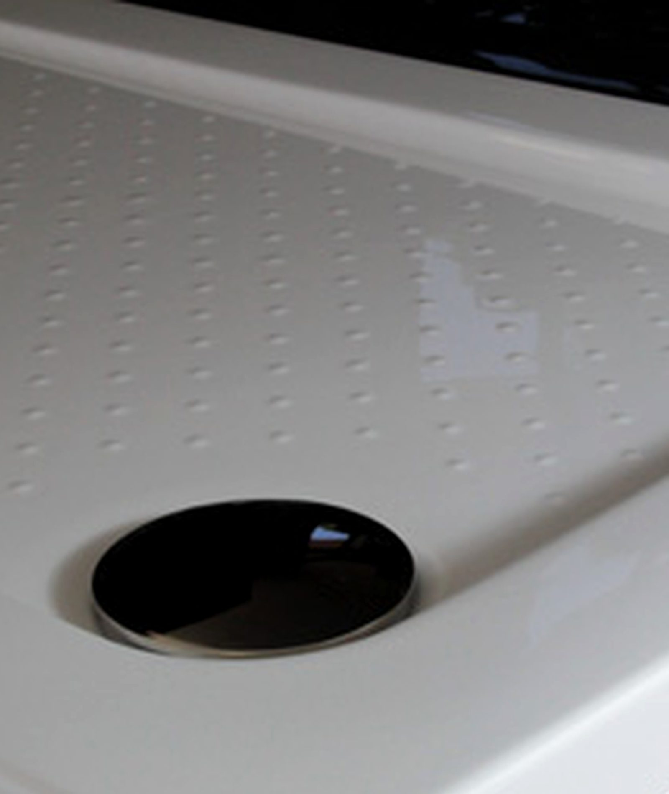
      </figure>
    </div>
    <div class="waterline" aria-hidden="true">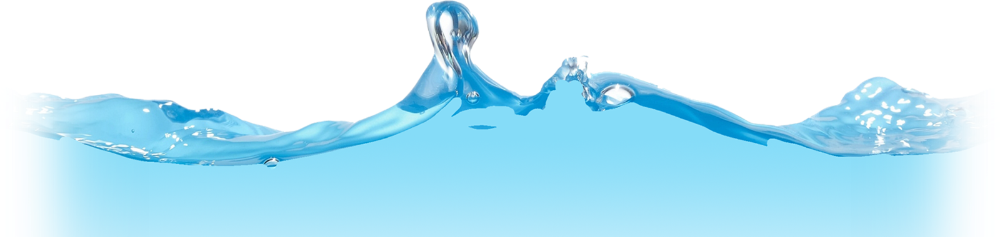</div>
    <figure class="dog-vignette">
      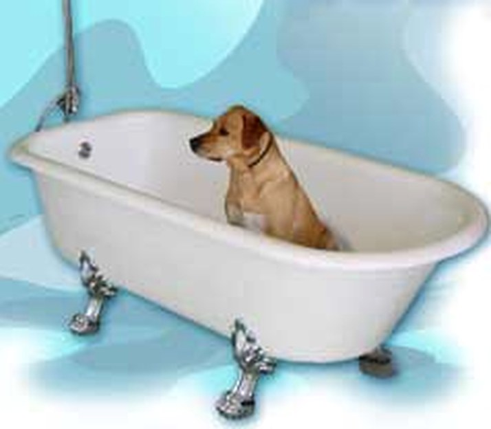
      <figcaption>${LANG==="it" ? "Di famiglia, dal 1972" : "One of the family, since 1972"}</figcaption>
    </figure>
  </div>

  <section class="tight"><div class="narrow" style="text-align:center">
    <p class="label" style="color:var(--metal)">${esc(T_.materialKicker)}</p>
    <h2 class="sec">${esc(T_.bandTitle)}</h2>
    <p class="lede" style="margin:0 auto">${esc(T_.bandBody)}</p>
  </div></section>

  <div class="reel">${reelFrames(12)}</div>

  <section><div class="wrap">
    <div class="duo">
      <div>
        <p class="label">${esc(T_.sysKicker)}</p>
        <h2 class="sec">${esc(T_.sysTitle)}</h2>
        <div class="prose"><p>${esc(T_.heroBody)}</p></div>
        <a class="btn" href="#/sistema" data-nav style="margin-top:14px">${esc(T_.heroCta1)}</a>
      </div>
      <figure class="frame" style="margin:0">
        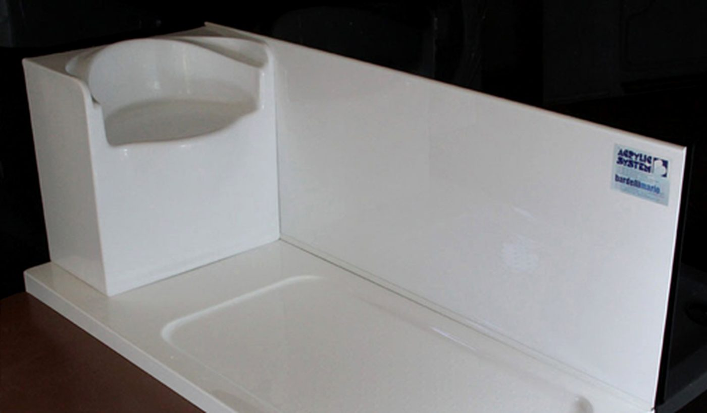
        <figcaption>${LANG==="it"?"Vasca nella vasca":"Bath in bath"}</figcaption>
      </figure>
    </div>
  </div></section>

  <section class="tight"><div class="wrap">
    <p class="label">${esc(T_.catsKicker)}</p>
    <h2 class="sec" style="margin-bottom:56px">${esc(T_.collectionTitle)}</h2>
    <div class="collection">${featured.map(p => card(p)).join("")}</div>
    <div style="margin-top:54px">
      <a class="btn" href="#/prodotti" data-nav>${esc(T_.backAll)} &mdash; ${PRODUCTS.length}</a>
    </div>
  </div></section>

  <div class="bleed">
    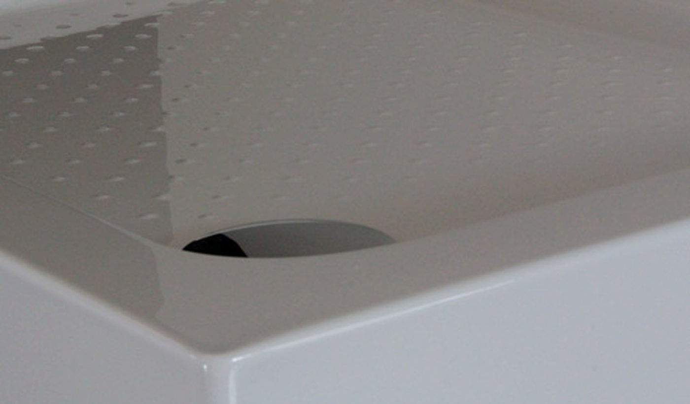
    <div class="wrap">
      <p class="label">${esc(T_.materialKicker)}</p>
      <h2 class="sec">${esc(T_.materialTitle)}</h2>
      <p>${esc(T_.materialBody)}</p>
    </div>
  </div>

  <section><div class="wrap">
    <p class="label">${esc(T_.catsKicker)}</p>
    <h2 class="sec" style="margin-bottom:48px">${esc(T_.catsTitle)}</h2>
    <div class="families">
      ${CATS.map(c=>`<a class="fam" href="#/prodotti?cat=${c.id}" data-nav>
        
        <div class="fam-cap">
          <span>${esc(t().catCount(PRODUCTS.filter(p=>p.cat===c.id).length))}</span>
          <b>${esc(c[LANG])}</b>
        </div>
      </a>`).join("")}
    </div>
  </div></section>

  ${tradeBlock()}`;
}

/** The material, up close. Twelve frames from the factory's own gallery. */
function reelFrames(n){
  const caps = LANG==="it"
    ? ["scarico","bordo","piano antiscivolo","sedile","scarico","bordo",
       "sedile","piano antiscivolo","angolo","superficie","bordo","pendenza"]
    : ["waste","rim","anti-slip floor","seat","waste","rim",
       "seat","anti-slip floor","corner","surface","rim","fall"];
  return Array.from({length:n||12},(_,i)=>{
    const id = String(i+1).padStart(2,"0");
    return `<figure>
      
      <figcaption>${esc(caps[i])}</figcaption>
    </figure>`;
  }).join("");
}

/** The dimension finder, deliberately placed low and framed as a trade tool.
 *  It is the smartest thing on the site and it speaks to installers, so it
 *  arrives after desire has been established, not before it. */
function tradeBlock(){
  const T_ = t();
  return `<section class="trade"><div class="wrap">
    <div class="duo">
      <div>
        <p class="label">${esc(T_.tradeKicker)}</p>
        <h2 class="sec" style="font-size:clamp(26px,3.2vw,42px)">${esc(T_.finderTitle)}</h2>
        <div class="prose"><p>${esc(T_.finderLede)}</p></div>
      </div>
      <div>
        <div class="finder-row">
          <div class="field"><label for="fL">${esc(T_.fLen)}</label>
            <input id="fL" type="number" inputmode="numeric" min="40" max="220" value="170"></div>
          <div class="field"><label for="fW">${esc(T_.fWid)}</label>
            <input id="fW" type="number" inputmode="numeric" min="40" max="220" value="70"></div>
          <div class="field"><label for="fT">${esc(T_.fTol)}</label>
            <select id="fT">
              <option value="3">&plusmn; 3 cm</option>
              <option value="6" selected>&plusmn; 6 cm</option>
              <option value="12">&plusmn; 12 cm</option>
            </select></div>
        </div>
        <div class="presets">
          <span>${esc(T_.fCommon)}</span>
          ${PRESETS.map(z=>`<button class="preset" type="button" data-preset="${z[0]},${z[1]}">${z[0]}&times;${z[1]}</button>`).join("")}
        </div>
      </div>
    </div>
    <div class="found" id="fCount"></div>
    <div id="fGrid"></div>
  </div></section>`;
}

/** Closing call to action. Appended to every page - this is the site's
 *  single conversion moment, so it never varies and never gets skipped. */
function ctaBand(){
  const T_ = t();
  return `<div class="closing">
    <div class="wrap closing-grid">
      <figure class="arch small">
        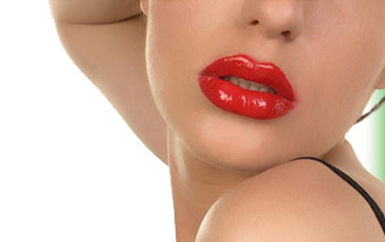
      </figure>
      <div>
        <h2>${esc(T_.ctaTitle)}</h2>
        <p>${esc(T_.ctaBody)}</p>
        <div class="btns">
          <a class="btn fill" href="#/contatti" data-nav>${esc(T_.ctaBtn)}</a>
          <a class="btn" href="#/prodotti" data-nav>${esc(T_.ctaBtn2)}</a>
        </div>
      </div>
    </div>
  </div>`;
}

function finderMarkup(){ return ""; }

function runFinder(){
  const L = +document.getElementById("fL").value;
  const W = +document.getElementById("fW").value;
  const tol = +document.getElementById("fT").value;
  const res = matches(L, W, tol);
  document.getElementById("fCount").innerHTML =
    `${esc(t().fResults(res.length))} &mdash; ${num(L)} \u00d7 ${num(W)} cm \u00b1 ${tol} cm`;
  document.getElementById("fGrid").innerHTML = res.length
    ? `<div class="found-grid">${res.slice(0,4).map(r=>card(r.p, r.size)).join("")}</div>`
    : `<p class="prose" style="margin-top:22px">${esc(t().fNone)}</p>`;
  document.querySelectorAll("[data-preset]").forEach(b=>
    b.setAttribute("aria-pressed", b.dataset.preset === `${L},${W}` ? "true" : "false"));
}

function viewProducts(query){
  const T_ = t();
  const cat = query.get("cat") || "";
  const list = PRODUCTS.filter(p => !cat || p.cat === cat);
  return `<section class="first"><div class="wrap">
    <p class="label">${esc(T_.catsKicker)}</p>
    <h2 class="sec">${esc(cat ? catName(cat) : T_.collectionTitle)}</h2>
    <p class="lede" style="margin-bottom:44px">${esc(T_.catsLede)}</p>
    <div class="filters">
      <button type="button" data-f="cat" data-v="" aria-pressed="${!cat}">
        ${esc(T_.catAll)}<i>${PRODUCTS.length}</i></button>
      <span class="sep">/</span>
      ${CATS.map(c=>`<button type="button" data-f="cat" data-v="${c.id}"
        aria-pressed="${cat===c.id}">${esc(c[LANG])}
        <i>${PRODUCTS.filter(p=>p.cat===c.id).length}</i></button>`).join("")}
    </div>
    <div class="collection">${list.map(p=>card(p)).join("")}</div>
  </div></section>`;
}

function viewDetail(id){
  const T_ = t();
  const p = PRODUCTS.find(x=>x.id===id);
  if(!p) return viewProducts(new URLSearchParams());
  const s = firstSize(p);
  const near = s ? matches(s[0], s[1], 10).filter(r=>r.p.id!==p.id).slice(0,4) : [];
  const extra = Object.entries(p.specs).filter(([k])=>
    !/dimensione|dimensioni|larghezza|lunghezza|profondit|altezz/i.test(k));
  return `<section class="first"><div class="wrap">
    <p class="label"><a href="#/prodotti?cat=${p.cat}" data-nav
      style="text-decoration:none;color:var(--metal)">${esc(catName(p.cat))}</a></p>
    <div class="detail">
      <div>
        ${p.img ? `<figure class="frame wide" style="margin:0">
          
        </figure>` : ""}
        <div class="plan-panel">${planSVG(p, s, {big:true})}</div>
        <p class="prose" style="font-size:14px;margin-top:18px">${esc(T_.detailNote)}</p>
      </div>
      <div>
        <h2 class="sec" style="font-size:clamp(28px,3vw,42px)">${esc(p[LANG])}</h2>
        ${LANG==="en" ? `<p style="color:var(--faint);font-size:13px;letter-spacing:.1em;margin-top:-10px">${esc(p.it)}</p>` : ""}

        ${p.sizes.length ? `<h3 class="sub" style="margin-top:34px">${esc(T_.detailSizes)}</h3>
          <div class="chips">${p.sizes.map(z=>`<span class="chip">${num(z[0])} \u00d7 ${num(z[1])} cm</span>`).join("")}</div>` : ""}

        ${p.heights.length ? `<h3 class="sub" style="margin-top:30px">${esc(T_.detailHeights)}</h3>
          <div class="chips">${p.heights.map(h=>`<span class="chip">${num(h)} cm</span>`).join("")}</div>` : ""}

        ${extra.length ? `<h3 class="sub" style="margin-top:30px">${esc(T_.detailSpecs)}</h3>
          <table class="spec">${extra.map(([k,v])=>
            `<tr><th>${esc(k)}</th><td>${esc(v)}</td></tr>`).join("")}</table>` : ""}

        <div style="margin-top:38px;display:flex;gap:12px;flex-wrap:wrap">
          <a class="btn fill" href="#/contatti?p=${encodeURIComponent(p[LANG])}" data-nav>${esc(T_.detailAsk)}</a>
          <a class="btn" href="#/prodotti?cat=${p.cat}" data-nav>${esc(T_.backAll)}</a>
        </div>
      </div>
    </div>
    ${near.length ? `<div style="margin-top:96px">
      <p class="label">${esc(T_.detailRelated)}</p>
      <div class="collection">${near.map(r=>card(r.p, r.size)).join("")}</div>
    </div>` : ""}
  </div></section>`;
}

function viewSistema(){
  const T_ = t();
  return `<div class="hero" style="height:64svh;min-height:420px">
    <div class="hero-img">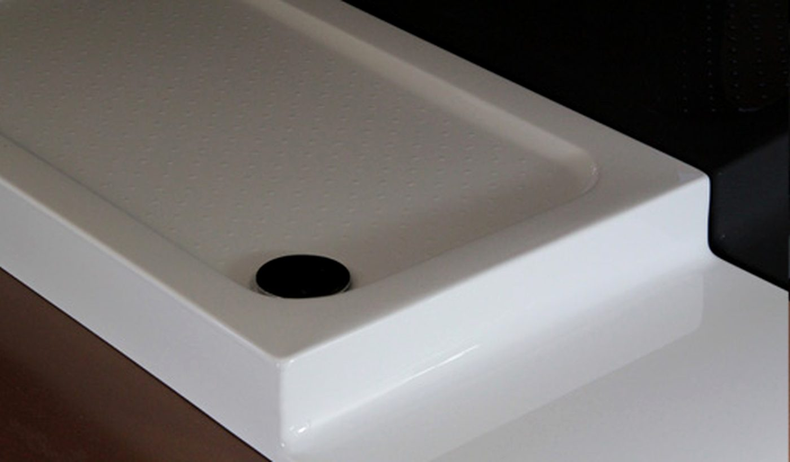</div>
    <div class="wrap">
      <p class="label">${esc(T_.sysKicker)}</p>
      <h1 style="font-size:clamp(34px,5.4vw,72px);max-width:16ch">${esc(T_.sysTitle)}</h1>
    </div>
  </div>
  <section><div class="narrow" style="text-align:center">
    <p class="lede" style="margin:0 auto">${esc(T_.heroBody)}</p>
  </div></section>
  <section class="tight"><div class="wrap">
    <div class="duo">
      <div class="plan-panel" style="margin-top:0">${heroSVG()}</div>
      <figure class="archive">
        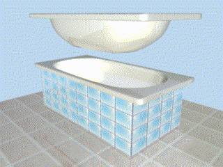
        <figcaption>${LANG==="it"
          ? "Dall'archivio: l'animazione originale del sistema"
          : "From the archive: the system's original animation"}</figcaption>
      </figure>
    </div>
  </div></section>
  <section class="tight"><div class="wrap">
    <div class="steps">
      ${T_.steps.map((x,i)=>`<div class="step">
        <b>0${i+1}</b><h4>${esc(x[0])}</h4><p>${esc(x[1])}</p></div>`).join("")}
    </div>
  </div></section>
  <div class="reel">${reelFrames(8)}</div>
  <section><div class="wrap">
    <div class="duo flip">
      <figure class="frame" style="margin:0">
        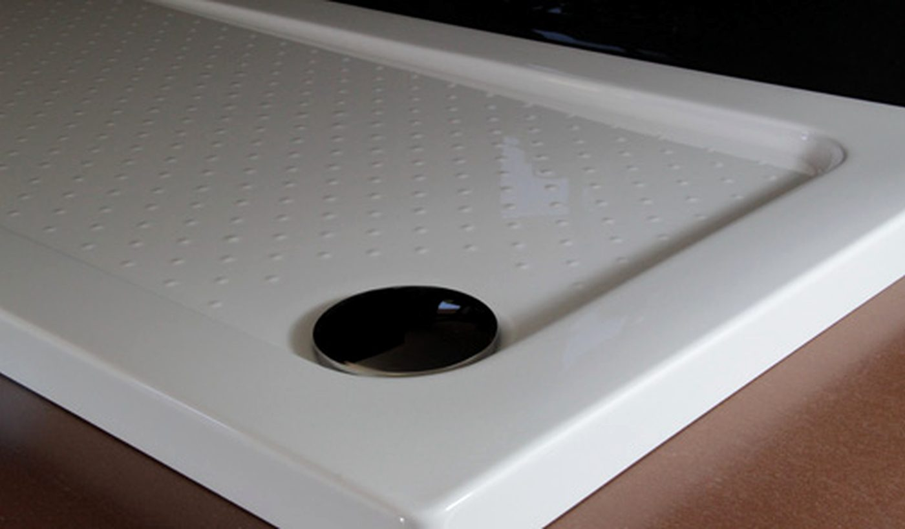
        <figcaption>${LANG==="it"?"Acrilico colato":"Cast acrylic"}</figcaption>
      </figure>
      <div>
        <p class="label">${esc(T_.materialKicker)}</p>
        <h2 class="sec">${esc(T_.materialTitle)}</h2>
        <div class="prose">
          <p>${esc(T_.materialBody)}</p>
          <p>${esc(T_.materialBody2)}</p>
        </div>
      </div>
    </div>
  </div></section>`;
}

function viewAzienda(){
  const T_ = t();
  return `<section class="first"><div class="narrow" style="text-align:center">
    <p class="label">${esc(T_.aziKicker)}</p>
    <h2 class="sec">${esc(T_.aziTitle)}</h2>
  </div></section>
  <section class="tight" style="padding-top:0"><div class="wrap">
    <div class="duo">
      <div class="prose">
        <p>${esc(T_.aziBody)}</p>
        <p>${esc(T_.aziBody2)}</p>
        <p>${esc(T_.aziBody3)}</p>
      </div>
      <figure class="frame" style="margin:0">
        
        <figcaption>${LANG==="it"?"Besozzo (VA)":"Besozzo, Italy"}</figcaption>
      </figure>
    </div>
  </div></section>
  <section class="tight"><div class="wrap">
    <div class="years">
      ${T_.timeline.map(x=>`<div class="year"><b>${esc(x[0])}</b><p>${esc(x[1])}</p></div>`).join("")}
    </div>
  </div></section>
  <div class="bleed">
    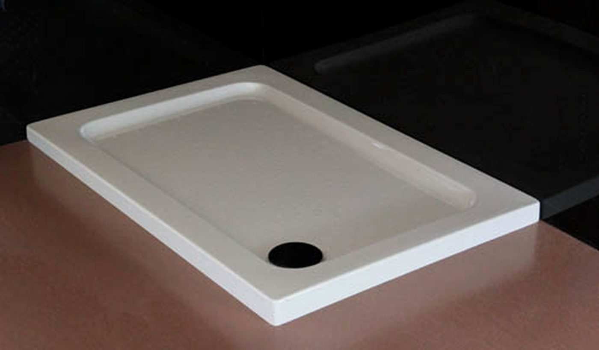
    <div class="wrap">
      <p class="label">${esc(T_.termoKicker)}</p>
      <h2 class="sec">${esc(T_.termoTitle)}</h2>
      <p>${esc(T_.termoBody)}</p>
      <div style="margin-top:26px">
        <a class="btn" href="#/termoformatura" data-nav>${esc(T_.nav.termo)}</a>
      </div>
    </div>
  </div>`;
}

function viewTermo(){
  const T_ = t();
  return `<section class="first"><div class="wrap">
    <p class="label">${esc(T_.termoKicker)}</p>
    <h2 class="sec" style="max-width:20ch">${esc(T_.termoTitle)}</h2>
    <div class="duo" style="margin-top:52px">
      <div class="prose">
        <p>${esc(T_.termoBody)}</p>
        <p>${esc(T_.termoBody2)}</p>
        <div style="margin-top:14px">
          <a class="btn fill" href="#/contatti?p=${encodeURIComponent(T_.termoKicker)}" data-nav>${esc(T_.nav.contatti)}</a>
        </div>
      </div>
      <figure class="frame" style="margin:0">
        
        <figcaption>${LANG==="it"?"Termoformatura sotto vuoto":"Vacuum thermoforming"}</figcaption>
      </figure>
    </div>
    <div class="steps" style="margin-top:72px">
      ${T_.termoList.map((x,i)=>`<div class="step"><b>0${i+1}</b><h4>${esc(x)}</h4></div>`).join("")}
    </div>
  </div></section>`;
}

function viewContatti(query){
  const T_ = t();
  const pre = query.get("p") || "";
  return `<section class="first"><div class="wrap">
    <p class="label">${esc(T_.contactKicker)}</p>
    <h2 class="sec">${esc(T_.contactTitle)}</h2>
    <p class="lede" style="margin-bottom:64px">${esc(T_.contactLede)}</p>
    <div class="duo">
      <div>
        <form id="enq" class="formgrid" novalidate>
          <div><label for="cn">${esc(T_.fName)}</label><input id="cn" name="n" autocomplete="name"></div>
          <div><label for="ce">${esc(T_.fEmail)}</label><input id="ce" name="e" type="email" autocomplete="email"></div>
          <div><label for="cp">${esc(T_.fPhone)}</label><input id="cp" name="p" type="tel" autocomplete="tel"></div>
          <div><label for="cc">${esc(T_.fCity)}</label><input id="cc" name="c" autocomplete="address-level2"></div>
          <div class="full"><label for="ct">${esc(T_.fType)}</label>
            <select id="ct" name="t">${T_.fTypes.map(x=>`<option>${esc(x)}</option>`).join("")}</select></div>
          <div class="full"><label for="cs">${esc(T_.fSize)}</label>
            <input id="cs" name="s" placeholder="170 \u00d7 70"></div>
          <div class="full"><label for="cm">${esc(T_.fMsg)}</label>
            <textarea id="cm" name="m">${esc(pre ? (LANG==="it"?"Richiesta su: ":"Enquiry about: ")+pre : "")}</textarea></div>
          <div class="full"><button class="btn fill" type="submit">${esc(T_.fCompose)}</button></div>
        </form>
        <div id="composed"></div>
      </div>
      <div>
        <figure class="frame" style="margin:0 0 40px">
          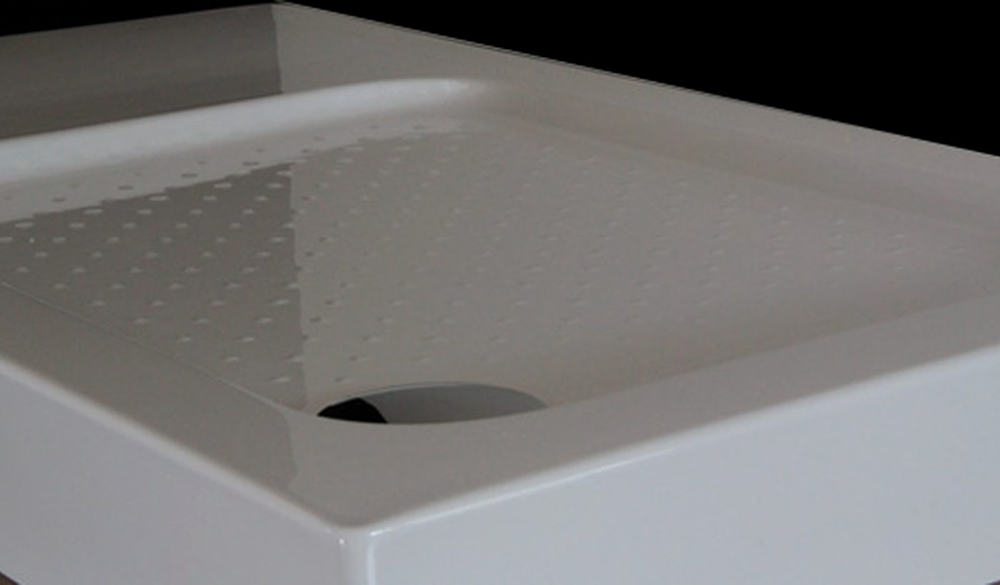
          <figcaption>Besozzo (VA)</figcaption>
        </figure>
        <div class="addr">
          <b>Bardelli Mario</b>
          Via Lago, 135<br>
          21023 Besozzo (VA) &mdash; Italia<br><br>
          <a href="tel:+390332989110">+39 0332 989110</a><br>
          <a href="mailto:info@bardellimario.eu">info@bardellimario.eu</a><br><br>
          P.IVA IT 02555390125
        </div>
      </div>
    </div>
  </div></section>`;
}

/* ============================================================
   7. Router
   ============================================================ */
const ROUTES = [
  ["#/",            "home",     () => viewHome()],
  ["#/sistema",     "sistema",  () => viewSistema()],
  ["#/prodotti",    "prodotti", q => viewProducts(q)],
  ["#/azienda",     "azienda",  () => viewAzienda()],
  ["#/termoformatura","termo",  () => viewTermo()],
  ["#/contatti",    "contatti", q => viewContatti(q)]
];

function parseHash(){
  const raw = location.hash || "#/";
  const [path, qs] = raw.split("?");
  return {path, query:new URLSearchParams(qs || "")};
}

function render(){
  const {path, query} = parseHash();
  const T_ = t();
  document.documentElement.lang = LANG;
  document.querySelectorAll("[data-lang]").forEach(b=>
    b.setAttribute("aria-pressed", b.dataset.lang === LANG ? "true" : "false"));

  // nav
  const key = path.startsWith("#/p/") ? "prodotti" : (ROUTES.find(r=>r[0]===path)||ROUTES[0])[1];
  document.getElementById("nav").innerHTML = [
    ["#/sistema","sistema"],["#/prodotti","prodotti"],
    ["#/termoformatura","termo"],["#/azienda","azienda"],["#/contatti","contatti"]
  ].map(([h,k])=>`<a href="${h}" data-nav ${k===key?'aria-current="page"':""}>${esc(T_.nav[k])}</a>`).join("");

  // page
  const app = document.getElementById("app");
  if(path.startsWith("#/p/")) app.innerHTML = viewDetail(path.slice(4));
  else {
    const r = ROUTES.find(r=>r[0]===path) || ROUTES[0];
    app.innerHTML = r[2](query);
  }
  // the contact page IS the call to action, so it does not repeat it
  if(path !== "#/contatti") app.insertAdjacentHTML("beforeend", ctaBand());

  // footer
  document.getElementById("foot").innerHTML = `
    <div class="foot">
      <div class="foot-brand">
        <b>Bardelli Mario</b><span>Acrylic System</span>
        <p>Via Lago, 135<br>21023 Besozzo (VA), Italia<br>
        +39 0332 989110<br>info@bardellimario.eu</p>
      </div>
      <div><h5>${esc(T_.catsKicker)}</h5>
        ${CATS.map(c=>`<a href="#/prodotti?cat=${c.id}" data-nav>${esc(c[LANG])}</a>`).join("")}</div>
      <div><h5>${esc(T_.aziKicker)}</h5>
        <a href="#/sistema" data-nav>${esc(T_.nav.sistema)}</a>
        <a href="#/azienda" data-nav>${esc(T_.nav.azienda)}</a>
        <a href="#/termoformatura" data-nav>${esc(T_.nav.termo)}</a>
        <a href="#/contatti" data-nav>${esc(T_.nav.contatti)}</a></div>
      <div><h5>${esc(T_.langNote)}</h5>
        <a href="#" data-setlang="it">Italiano</a>
        <a href="#" data-setlang="en">English</a></div>
    </div>
    <div class="legal">
      <span>&copy; ${new Date().getFullYear()} Bardelli Mario &middot; P.IVA IT 02555390125</span>
      <span>${LANG==="it"?"Qualit\u00e0 Made in Italy":"Quality Made in Italy"}</span>
    </div>`;

  if(document.getElementById("fGrid")) runFinder();
  window.scrollTo({top:0, behavior:"instant"});
}

/* ---- events ---- */
addEventListener("hashchange", render);
addEventListener("DOMContentLoaded", render);

document.addEventListener("click", e=>{
  const lang = e.target.closest("[data-lang]");
  if(lang){ setLang(lang.dataset.lang); return; }

  const setl = e.target.closest("[data-setlang]");
  if(setl){ e.preventDefault(); setLang(setl.dataset.setlang); return; }

  const preset = e.target.closest("[data-preset]");
  if(preset){
    const [L,W] = preset.dataset.preset.split(",");
    document.getElementById("fL").value = L;
    document.getElementById("fW").value = W;
    runFinder();
    return;
  }

  const filter = e.target.closest("[data-f]");
  if(filter){
    const {query} = parseHash();
    if(filter.dataset.v) query.set(filter.dataset.f, filter.dataset.v);
    else query.delete(filter.dataset.f);
    const qs = query.toString();
    location.hash = "#/prodotti" + (qs ? "?"+qs : "");
    return;
  }

  const menu = e.target.closest("#menuBtn");
  if(menu){
    const nav = document.getElementById("nav");
    const open = nav.classList.toggle("open");
    menu.setAttribute("aria-expanded", open ? "true" : "false");
    return;
  }
  if(e.target.closest("nav a")) {
    document.getElementById("nav").classList.remove("open");
    document.getElementById("menuBtn").setAttribute("aria-expanded","false");
  }
});

document.addEventListener("input", e=>{
  if(["fL","fW","fT"].includes(e.target.id)) runFinder();
});
document.addEventListener("change", e=>{
  if(e.target.id === "fT") runFinder();
});

/* Enquiry: compose the text and hand it over. Nothing is sent from
   the page - the visitor copies it or opens it in their mail client. */
document.addEventListener("submit", e=>{
  if(e.target.id !== "enq") return;
  e.preventDefault();
  const f = e.target, T_ = t();
  const v = n => (f.elements[n].value || "").trim();
  // only the fields actually filled in
  const rows = [[T_.fType,"t"],[T_.fName,"n"],[T_.fEmail,"e"],[T_.fPhone,"p"],
                [T_.fCity,"c"],[T_.fSize,"s"]]
    .filter(([,k]) => v(k))
    .map(([label,k]) => `${label}: ${v(k)}`);
  const lines = (v("m") ? rows.concat(["", v("m")]) : rows).join("\n");
  const subj = (LANG==="it" ? "Richiesta \u2014 " : "Enquiry \u2014 ") + (v("t") || "Bardelli Mario");
  const box = document.getElementById("composed");
  box.innerHTML = `
    <p style="font-size:15px;color:var(--muted);margin-top:22px;font-weight:300">${esc(T_.fComposeHint)}</p>
    <div class="composed" id="enqText">${esc(lines)}</div>
    <div style="display:flex;gap:10px;flex-wrap:wrap;margin-top:14px">
      <button class="btn ghost" type="button" id="copyBtn">${esc(T_.fCopy)}</button>
      <a class="btn ghost" href="mailto:info@bardellimario.eu?subject=${encodeURIComponent(subj)}&body=${encodeURIComponent(lines)}">${esc(T_.fOpenMail)}</a>
    </div>`;
  box.scrollIntoView({behavior:"smooth", block:"nearest"});
});

document.addEventListener("click", e=>{
  if(!e.target.closest("#copyBtn")) return;
  const btn = e.target.closest("#copyBtn");
  const txt = document.getElementById("enqText").textContent;
  const done = () => { btn.textContent = t().fCopied; setTimeout(()=>btn.textContent = t().fCopy, 1800); };
  try{
    navigator.clipboard.writeText(txt).then(done, () => selectFallback());
  }catch(err){ selectFallback(); }
  function selectFallback(){
    const r = document.createRange();
    r.selectNodeContents(document.getElementById("enqText"));
    const s = getSelection(); s.removeAllRanges(); s.addRange(r);
  }
});

// the header is transparent over the hero and solid once past it
const hdr = document.getElementById("hdr");
function onScroll(){ hdr.classList.toggle("solid", scrollY > 40); }
addEventListener("scroll", onScroll, {passive:true});
onScroll();

render();
</script>
